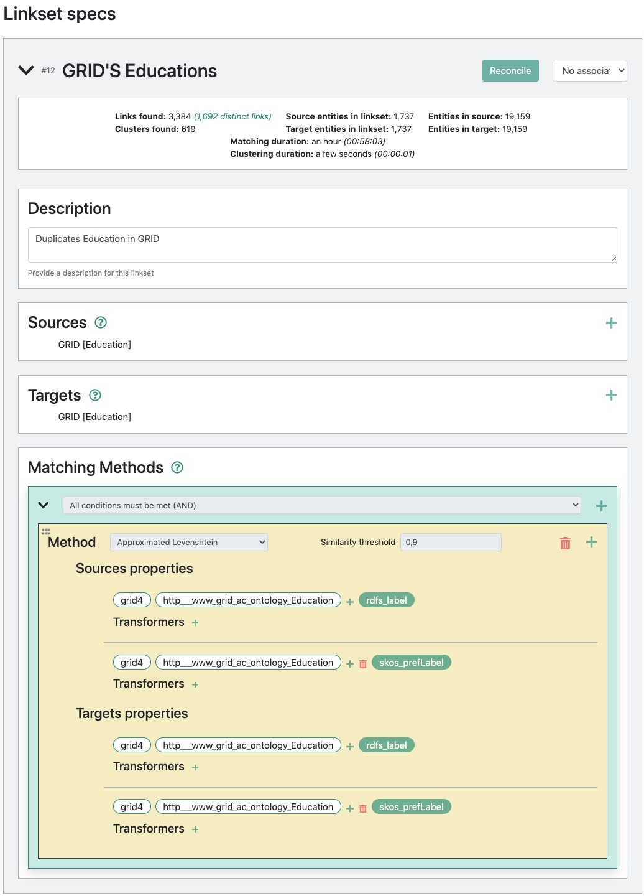

A platform for addressing various aspects of the disambiguation of Entities .
These aspects include the creation, manipulation, validation, provenance and visualisation of links.
Developped in the context of RISIS & the Golden Agents project
These aspects include the creation, manipulation, validation, provenance and visualisation of links.
Developped in the context of RISIS & the Golden Agents project

At present, this documentation is not fully in the image of current Lenticular Lens. However, the currently work in progress UI is meant to be inline with the documentation.
TABLE OF CONTENTS (TOC)
3. The Lenticular Lens Menu
4. Linkset: Link Construction
6. Link Validation
7. Link Export
1. INTRODUCTION (TOC)
Time and again, researchers are presented with problems for which they postulate and test hypotheses in order to provide us with robust explanations for research questions successfully investigated. Often enough, solid explanations for complex problems require exploring a multitude of datasources. This is the case, for example, in domains such as e-science (multiple scientific datasets), e-commerce (multiple product vendors), tourism (multiple data providers), e-social science, digital humanities, etc.
DATA INTEGRATION. The use of various datasources come at the expense of heterogeneity which obfuscates the path to data integration and thereby hinders accurately addressing complex problems. Dealing with multiple datasources or data providers highlights the freedom at which providers document facets of the same entity. Indeed, this feature of oriented freedom for entity descriptions can explain, to a certain extent, the inherent difficulty to integrate heterogeneous datasources. In the Semantic Web, this problem is partially circumvented as any pair of resources can be linked regardless to the uniformity of data representation or vocabulary used, i.e. uniformizing data/schema is not a prerequisite for data integration provided that links between co-referent entities across heterogeneous datasets exist.
RESULT QUALITY. The quality of supporting evidence for accepting or rejecting the hypothesis under investigation for a complex problem greatly depends on the correctness of the links integrating the underlying datasources.
This begs for questions regarding the aboutness and correctness of the links, such as:
- How to create correct links? More specifically, are there reliable tools for linking co-referent descriptions of entity scattered across various heterogeneous datasets? Can different tolls be combined?
- How to judge the applicability of links? Can their quality be estimated? Can they be improved, manipulated, visualised for validation purposes, reproduced? More specifically, is there a platform that supports all of the aforementioned concerns?
LINK CONSTRUCTION. Through the years, a number of entity matching tools have been developed and tested.
However, some of theses tools have been developed for specific datasets, while others have limited applicability as they have mainly been tested in domain specific areas using synthetic or simplistic data, generally from at most two datasets. For example, as research in social sciences is increasingly based on multiple heterogeneous datasources, it becomes problematic to be limited to the integration of two datasets.
Furthermore, in practice, the heterogeneity, messiness, incompleteness of data raise the bar higher in terms of entity matching complexity.
In other words, most matching algorithms have been successfully applied in limited and controlled environments. This motivates the need for having the means to (re)use and combine generic matching approaches in order to solve specific problems.
ENTITY DISAMBIGUATION PROPOSAL. In this document, we present a tool that supports disambiguation over multiple datasets: the Lenticular Lens. As a domain agnostic approach, the Lenticular Lens tool reuses existing matching approaches to allow for the user to reach their goals in ways that alleviates some of the main aforementioned issues:
- User-dependent and context-specific link discovery.
- User-based explicit concept mapping.
- Integration of more than two datasets.
- Combining entity matching algorithms and results.
- Structure-based evaluation of identity link networks.
- Enabling visualisation to support link/cluster validation.
- Metadata for documenting the link aboutness and enabling reproducibility.
The context dependent link discovery idea developed and implemented in the Lenticular Lens [Refs] is an extension of the Linkset and Lens concepts introduced by the Open PHACTS project [Ref] in the quests for building an infrastructure for integrating pharmacological data. Our extension and broadening of these concepts enabled us to design and build a flexible tool for undertaking entity disambiguation in a broader perspective.
2. BACKGROUND (TOC)
2.1 TERMINOLOGY (TOC)
Before diving into how to use the Lenticular Lens, we define a number of terms we believe to be important for a better comprehension of what is offered by the tool. For some of the concepts defined here, we opt for a broader scope which fits best problems encounter in every day life .
RESOURCE. Anything can be a resource, including physical things, documents, abstract concepts, numbers and strings.
RDF 1.1
IRI - URI - URL - URN . These constitute ways in which things (resources) in the real world can be referred to in the digital world. The resource denoted by an IRI is called its referent, and the resource denoted by a literal is called its literal value.
RDF 1.1. In the IRI example provided below, we illustrate six IRIs referents of resources of various types (hero, villain and vocabulary).
-----------------
-- Example 2.1 -- IRIs
-----------------
A resource's REFERENT is an IRI.
A resource's LITERAL VALUE is a LITERAL.
http://example.org/villain#Green-Goblin
http://example.org/villain#Thanos
http://example.org/hero#Spiderman
http://example.org/person#Peter-Parker
http://www.perceive.net/schemas/relationship/enemyOf
http://xmlns.com/foaf/0.1/name
Fusion provides nice wording of all these terms as provided below. In short, URL, URN and URI are all specific types of an IRI.
URI.
A Uniform Resource Identifier is a compact sequence of characters that identifies an abstract or physical resource. The set of characters is limited to US-ASCII excluding some reserved characters ( ; / ? : @ = & ). Characters outside the set of allowed characters can be represented using Percent-Encoding. A URI can be used as a locator, a name, or both. If a URI is a locator, it describes a resource’s primary access mechanism. If a URI is a name, it identifies a resource by giving it a unique name. The exact specifications of syntax and semantics of a URI depend on the used Scheme that is defined by the characters before the first colon. [RFC3986]
URN.
A Uniform Resource Name is a URI in the scheme urn intended to serve as persistent, location-independent, resource identifier. Historically, the term also referred to any URI. [RFC3986] A URN consists of a Namespace Identifier (NID) and a Namespace Specific String (NSS): urn:
: The syntax and semantics of the NSS is specific specific for each NID. Beside the registered NIDs, there exist several more NIDs, that did not go through the official registration process. [RFC2141] URL
A Uniform Resource Locator is a URI that, in addition to identifying a resource, provides a means of locating the resource by describing its primary access mechanism [RFC3986]. As there is no exact definition of URL by means of a set of Schemes, URL is a useful but informal concept, usually referring to a subset of URIs that do not contain URNs [RFC3305].
IRI
An Internationalized Resource Identifier is defined similarly to a URI, but the character set is extended to the Universal Coded Character Set. Therefore, it can contain any Latin and non Latin characters except the reserved characters. Instead of extending the definition of URI, the term IRI was introduced to allow for a clear distinction and avoid incompatibilities. IRIs are meant to replace URIs in identifying resources in situations where the Universal Coded Character Set is supported. By definition, every URI is an IRI. Furthermore, there is a defined surjective mapping of IRIs to URIs: Every IRI can be mapped to exactly one URI, but different IRIs might map to the same URI. Therefore, the conversion back from a URI to an IRI may not produce the original IRI. [RFC3987]
RDF. As described by the W3C, RDF is a graph-based data model for interchanging data on the Web and it stands for Resource Description Framework. In other words, Lexico, the Oxford supported dictionary, emphasises on the semantic aspect by defining it as a model for encoding semantic relationships between items of data so that these relationships can be interpreted computationally. Expressing a relationship between a pair of RDF resources is done as a sequence 〈subject relation object .〉 of three terms. The sequence of terms is called a triple where each of its terms is separated by whitespace and the sequence is terminated by ‘.’. The example below illustrates two simple triple syntax. The triples, not only do they provid Spiderman’s mane and assert that Spiderman and Peter Parker are the same, but they also provid identification for Spiderman, Peter Parker and the vocabulary terms name and sameAs.
In RDF, any triple is an RDF STATEMENT. There exist various syntaxes for representing triple statements. For further reading, see
N-Triples, Notation3, N-Quads, Turtle, RDF XML, RDFa,JSON-LD…
-----------------
-- Example 2.2 -- TRIPLES IN N-TRIPLE SYNTAX
-----------------
<http://example.org/hero#Spiderman> <http://xmlns.com/foaf/0.1/name> "Peter-Parker" .
<http://example.org/hero#Spiderman> <http://www.w3.org/2002/07/owl#sameAs> <http://example.org/person#Peter-Parker>
-----------------
-- Example 2.3 -- TRIPLES IN TURTLE SYNTAX
-----------------
@prefix ex: <http://example.org/#> .
@prefix rel: <http://www.perceive.net/schemas/relationship/> .
ex:green-goblin rel:enemyOf ex:Spiderman .
ex:spiderman foaf:name ex:Peter-Parker.
RDF LINK. It is also known as a correspondent triple [Euzenat] or simply link in RDF?? and [VoID]. Links are triples in the form of 〈subject relation object〉 and are meant to exist only between two datasets. However, beside the incentive for providers to link their data to existing datasets, we do not see a good reason for a link not to exist within the same dataset. Thereby, in this document, an RDF link is a relation between two resources (digital representations of entities presented as URIs) regardless of the datasource they stem from. This means a that a link can involve a minimum of one dataset and a maximum of two.
IDENTITY LINK. An equality relation between two resources (digital representations of the same real world entity presented as URIs) regardless of the datasource they stem from. In this document we often use the term link to denote identity link unless otherwise stated. Mainly described using the predicate owl:sameAs, such encoded semantic relationship entails full equality between two resources. This Semantic interpretation applies independently of context even though in real life problems, the equality between resources depends not only on their intrinsic properties but also on the purpose or task for which they are used. In this regard, we present the in the Export menu section the Lenticular Lens approach on the use and documentation of identity links in practice.
LINK VALIDATION. The process of accepting or rejecting a link. This process is documented with the validation status (accepted or rejected) of the link and the supporting reasons.
LINK SPECIFICATION. In the Lenticular Lens, a link specification can be view as a reproducibility metadata. It provides information on how set of links came to be. In other worlds, it explicitly defines the context in which a link hold and supports decisions making during the validation process (accepting or rejecting a link).
LINKSET/ALIGNMENT. In [VoID], a linkset is a collection of RDF links between two datasets where all subjects stem from one dataset and all objects from the other dataset. In here, we alleviate such strict restriction by allowing a linkset to be a set of triples using the same link predicate (regardless of the link being an equality predicate or not) over one or two datasets. This predicate is called the linktype of the linkset.
In the Lenticular Lens, all links within a linkset share the same generic link-specification.
LENS. A type of linkset involving one, two or more datasets and a set-like link manipulation operators such as Union, Intersection, Difference or Transitivity.
IDENTITY LINK NETWORK. A set of co-referent entities regardless of the data they stem from. This can also be viewed as an Identity Cluster of co-referent entities.
NAMED GRAPH. According to Wikipedia, named graphs are a key concept of Semantic Web architecture in which a set of Resource Description Framework statements (a graph) are identified using a IRI, allowing descriptions to be made of that set of statements such as context, provenance information or other such metadata.
-----------------
-- Example 2.4 -- NAMED GRAPH
-----------------
Turtle named graph syntax of a linkset of three links using the owl:sameAs linktype.
In the example, http://example.org/#linkset-1 is the IRI of the named graph. For
more detail on Turtle RDF syntax, See https://www.w3.org/TR/turtle/#simple-triples.
where EXAMPLE 9 illustrates all the different ways of writing IRIs in Turtle.
@base <http://example.org/> .
@prefix ex: <http://example.org/#> .
@prefix owl: <http://www.w3.org/2002/07/owl#> .
@prefix foaf: <http://xmlns.com/foaf/0.1/> .
@prefix sim: <http://purl.org/ontology/similarity/> .
ex:linkset-1
{
ex:Chiara owl:sameAs ex:Latronico .
ex:Al owl:sameAs ex:Al_Idrissou .
ex:Al owl:sameAs ex:Al_Koudous .
}
DEFAULT GRAPH. In a triple-store jargon, any triple without a specific named-graph ends up in the default graph. In the example below, the triple at line 4 is located in the default graph while triples at line 8 and 9 are in an explicitly stated graph, in the named-graph: ex:linkset-1.
-----------------
-- Example 2.5 -- DEFAULT NAMED-GRAPH
-----------------
ex:Chiara owl:sameAs ex:Latronico .
ex:linkset-1
{
ex:Al owl:sameAs ex:Al_Idrissou .
ex:Al owl:sameAs ex:Al_Koudous .
}
PREFIX. Below are the prefixes used in this document:
-----------------
-- Example 2.6 -- PREFIXES USED IN THIS MANUAL
-----------------
@prefix A: <http://example.org/A#> .
@prefix B: <http://example.org/B#> .
@prefix C: <http://example.org/C#> .
@prefix dataset: <http://example.org/dataset#> .
@prefix dcterms: <http://purl.org/dc/terms/> .
@prefix ex: <http://example.org/#> .
@prefix foaf: <http://xmlns.com/foaf/0.1/> .
@prefix format: <http://www.w3.org/ns/formats/> .
@prefix grid: <http://www.grid.ac/ontology/> .
@prefix hero: <http://example.org/hero#> .
@prefix law: <http://www.opendatacommons.org/>
@prefix owl: <http://www.w3.org/2002/07/owl#> .
@prefix person: <http://example.org/person#> .
@prefix prov: <http://www.w3.org/ns/prov#> .
@prefix rdf: <http://www.w3.org/1999/02/22-rdf-syntax-ns#> .
@prefix rdfs: <http://www.w3.org/2000/01/rdf-schema#>
@prefix rel: <http://www.perceive.net/schemas/relationship/> .
@prefix sim: <http://purl.org/ontology/similarity/> .
@prefix void: <http://rdfs.org/ns/void#> .
@prefix voidPlus: <http://vocabulary/voidPlus#> .
@prefix validation: <http://vocabulary/validation#> .
2.2 ONTOLOGY (TOC)
 Fig 4.11: An example showing how to deduplicate a dataset using an edit distance with threshold 0.9.
Fig 4.11: An example showing how to deduplicate a dataset using an edit distance with threshold 0.9.
3. THE LENTICULAR LENS MENUS (TOC)
As a preview of what can be done with the Lenticular Lens tool, we list here the main menus composing the tool and provide a brief description of what can be done in each of the menu.
RESEARCH. In this menu, we illustrates how to defined the scope of a research.
SELECT. In this menu, we illustrates how to:
- Use the default Golden Agent’s endpoint or to provide other GraphQL locations so that remote datasources can be located and made available to the user;
- Select (datasources and data-types) from the available list of datasources at the remote location so that data can be integrated and vital information can be extracted in order to conduct our experiment;
- Define restrictions over selected entity-types.
CREATE. In this menu, we show how to use and combine resolution methods.
MANIPULATE. In this menu, we show how to apply set like operations (Union, Intersection, Difference, Composition and In-Set) over linksets and lenses.
VALIDATE. In this menu, we show how to validate existing links (accept, reject, validation rational) for analysis or method accuracy. We also show in this menu how to use the visualisation feature to ease to some extent the validation task.
EXPORT. This menu illustrates the reach options supporting the export of a linkset or lens.
EXTRACT. In this last menu, we show how the user can materialise the entity-based integration of her selected datasource for the extraction of information vital to her analysis.
The rest of the manual will first discuss LINK CONSTRUCTION (it includes the RESEARCH, SELECT and CREATE options), then LINK MANIPULATION (it includes the MANIPULATE, and VALIDATION options), followed by LINK EXPORT (it is about the EXPORT option) and finally INTEGRATION MODEL (it is about the EXTRACT option).
4. LINK CONSTRUCTION (TOC)
Linking co-referent entities across a variety of datasources is a pragmatic and fast way to seamlessly navigate across datasets without having to agree in a uniform vocabulary. This solution offered in the Semantic Web architecture appears attractive as the ultimate goal for the researcher executing this task is not the integration of data but the extraction of vital information for reaching valid conclusions about problems under scrutiny. This said, the Lenticular Lens offers means to reach that ultimate goal of the researcher while making sure that the steps taken by the researcher are documented such that other researchers can easily re-generate the data leading to specific conclusions if need be.
Along the way of entity-based data integration and data extraction, the Lenticular Lens aims to document among others:
- The datasources to integrate;
- The reasons behind a specific integration;
- The entity types and restrictions that ensure correctness in bridging across datasources of interest;
- The matching methods and specifications justifying the existence of a set of links.
The Lenticular Lens tool aims to provide generic methods that allows a broader audience suffering the same need for data integration. The first step in creating and documenting links using the Lenticular Lens is defining the scope in witch links are to be created and possibly validated. For that, the tool offers the RESEARCH menu followed by the SELECT and CONSTRUCT menus.
We now go through each of these first three menus underlying the existence of links.
4.1 Defining the Research’s Scope
The RESEARCH menu is the starting point in learning how to interact with the Lenticular Lens tool. In general, a research question somehow sets the scope in which link creations, manipulations or validation take place. This provides the first building block supporting the user with defining the context in which a particular alignment is generated. Using this menu, part of the context is made explicit by selecting the datasets and entity types necessary to continue the investigation.
As an overview, the RESEARCH menu provides researchers with means to describe the research of interest in terms of:
Research Questionfor inserting the main research question driving the integration.Hypothesisfor pointing out the hypothesis in mind prior to the data extraction.LinkandCitationto ensure that, if the results happen to be published, the researcher still has the facility to add a link to the publication and and a bibliographic reference for future reuse.
Fig. 4.1 illustrates the different fields to be filled in by the researcher for a quick overview of what can happen in this research project and why. Once providing the information is done, the Save button at the bottom of the page can be clicked to save the provided information and exit the Lenticular Lens if the user which to continue with other tasks. Or, should the user choose to continue the alternative Save and next button can be used to save the project and move to the next window.
 Fig. 4.1: Describing the scope of he research question.
Fig. 4.1: Describing the scope of he research question. 4.2 Data Selection and Restrictions
In the previous step or window, the researcher has defined the scope of the research for which data are to be extracted and analysed. In this second window labelled SELECT, the user is to describe and select the entity types involved in his research. For that, the location of the datasource needs to be provided and the datasets in which the respective entities of interest reside need to be selected.
4.2.1 Data Selections
As the user activates the Saves and next button at the end of the previous page, she is presented with a new window with a single card labelled Entity-Type Selection 1 as presented in Fig. 4.2. The plus button at the right side of the picture enables the user to create new cards when needed while the arrow-head  button at the left side of the card’s label allows for the unveiling of the card as displayed in Fig 3.
button at the left side of the card’s label allows for the unveiling of the card as displayed in Fig 3.
 Fig. 4.2: The card view for data selection
Fig. 4.2: The card view for data selection Describing the type of an entity can be done using the Description text box for each entity type. To provide the location of the data, the GraphQL Endpoint text box can be use to fill in the URL of any GraphQL end point. Once the endpoint is given and loaded, a dataset can be selected from the list of datasets available at the provided endpoint. The selection of a dataset will prompt a new dropdown text box as Entity type, providing the user with the facility to select the entity type of interest. After loading the provided URL of the default Golden Agent’s endpoint, Fig. 4.3 shows the list of datasets available at that location to choose from.
 Fig. 4.3: List of datasets available at the default Golden Agent’s GraphQL endpoint.
Fig. 4.3: List of datasets available at the default Golden Agent’s GraphQL endpoint. 4.2.2 Data Exploration
At this point, successfully providing the required information (Dataset and Entity-Type) triggers the appearance of the Explore Sample button at the right side of the card’s label (Entity-type selection 1) as displayed in Fig. 4.4. As illustrated in Fig. 4.5, with this button, users are now able to explore information of their choice about the entities of interest by selecting properties describing them. Keep in mind that this feature is only intended as exploration alternative to make sure of the choices (dataset, entity-type and restrictions) made.
 Fig. 4.4: Example of the
Fig. 4.4: Example of the Explore sample button showing only after the entity type is selected.  Fig. 4.5: Exploring the description of entities of choice, stemmed from the dataset of interest.
Fig. 4.5: Exploring the description of entities of choice, stemmed from the dataset of interest. 4.2.3 Entity Restrictions
If need be to filter entities based on specific conditions, this is also possible with the Filter card shown in Fig. 4.6.
 Fig. 4.6: The card for defining entity restrictions.
Fig. 4.6: The card for defining entity restrictions. Once the button is clicked, this card presents the user with a Filter-Logic box which enable the creation of a relatively complex and versatile entity restrictions. Fig. 4.7 for example show the list of available filtering options while Fig. 4.8 illustrates an example where the has minimum date and has maximum date filtering options are used to isolate entities of interest. These entities are now those between with a registration date between [1600, 1659] and having their respective literal name exempt of trailing dots (…).
 Fig. 4.7: List of restriction options.
Fig. 4.7: List of restriction options.  Fig. 4.8: The card for defining entity restrictions.
Fig. 4.8: The card for defining entity restrictions. 4.2.3.1 Entity restriction options
Equal to / Not Equal to. This option allows one to select entities that have the value of a certain property equal (or not) to a certain value. For example, all entities with property
ex:workLocationequal (or not) toAmsterdam.Contains / Does not contain. This option is used to make sure that the property-value of the entities of interest contains or does not contain a specific sequence of characters. For example,
%...%could be used for (i) excluding people whose names contain trailing dots or (ii) to select those entities to apply a particular modification onto their names, like adding the surname of the father for a baptised child whose surname is given as....Has property / Has no property. This option is used to select entities based on the existence (or not) of a certain property. Let assume, for example, that the user is interested in entities that are parents. This option allows one to filter all entities for which the a value exists for the property
ex:parentOffor example. It also allows you to exclude all entities that are parents if the optionHas no propertyis used instead.Has minimum / maximum value. This option allows for restricting entities to be within or outside a specified range given user’s specified property-values of type number over which the restriction can be applied. To delimit both upper and lower bounds, the user can combine minimum and maximum using the logical box AND.
Has minimum / maximum date. This option allows for restricting entities to be within or outside a specified range given user’s specified property-values of type date over which the restriction can be applied. Within this option, a date format can be specified. The default format is
YYYY-MM-DD. The values 10, 300 and 1990 for example will be considered as year while 10-1, 300-1 and 1990-1 will be considered as the first month of the respective year values. To delimit both upper and lower bounds, the user can combine minimum and maximum using the logical box AND.Has minimum / maximum appearances. This option allows for restricting entities for which a given property value occurs within a specified range. For example, to avoid excessive number of possible matches, one can delimit that only entities whose name value occur less than 5 times in the dataset will be included. To delimit both upper and lower bounds, the user can combine minimum and maximum using the logical box AND.
In set. This option allows the filtering of a collection of resources of interest based on a set of resources. These set of resources is not manually provided but can be obtained through a list of existing linksets or lenses. The example below provides a detailed understanding of this filtering approach.
-----------------
-- Example 4.1 -- IN SET
-----------------
Two collections A and B to be matched via whatever method would create a se of
links labelled linkset-AB. However, we are only interested in a subset of
linkset-AB, such that it's resources (subject, object or both) are present in
another given set, namely an input-linkset I. For efficiency purposes,
linkset-AB does not need to be fully created to be filtered later on. This
implies that the collections A and/or B need to be filtered such that
A' = A ∩ I and/or B' = B ∩ I before executing the matching algorithm.
######################################################
# Linksets as named graphs #
######################################################
ex:input-linkset
{
A:Chiara owl:sameAs C:Latronico .
A:Al owl:sameAs C:Al_Idrissou .
A:Al owl:sameAs C:Al_Koudous .
}
ex:linkset-AB
{
A:Chiara owl:sameAs B:Chiara .
A:Kerim owl:sameAs B:Kerim .
}
######################################################
# In Resource Set #
######################################################
### The set S of resources from input-linkset is:
### S = {A:Chiara, A:Al, C:Latronico, C:Al_Idrissou, C:Al_Koudous}
ex:linkset-SubjectInSet
{
A:Chiara owl:sameAs B:Chiara .
}
4.3 Entity Resolution/Matching
So far, the RESEARCH and SELECT menus set the scene for allowing the user to create the links that will enable the integration of datasources selected within the SELECT menus. In the current menu, the CREATE menu, we will describe the built-in entity resolution algorithms for finding links between entities stemmed from the user-selected datasets. Using the Lenticular Lens Logic-Box, we will show how the tool makes it possible to combine the available resolution algorithms and matching rules for the discovery of links within and/or across the datasources of interest.
4.3.1 Resolution Methods
1. Embedded. The method extracts an alignment already provided within the source dataset. The extraction relies on the value of the linking property, i.e. property of the source that holds the identifier of the target. The inconvenience in generating a linkset in such way is that the real mechanism used to create the existing alignment is not explicitly provided by the source dataset.
Example 4.2 shows a sample of the grid dataset (https://www.grid.ac/downloads) with embedded links. With such links, Grid connects its instances to external datasets such as Wikidata for example using the link predicate: grid:hasWikidataId illustrated in Example 4.2 with the linkset ex:Grid-embedded-linkset.
-----------------
-- Example 4.2 -- EXTRACT FROM THE GRID DATASET (https://www.grid.ac/downloads)
-----------------
<http://www.grid.ac/institutes/grid.1001.0>
foaf:homepage <http://www.anu.edu.au/> ;
rdfs:label "Australian National University" ;
grid:isni "0000 0001 2180 7477" ;
grid:hasWikidataId <http://www.wikidata.org/entity/Q127990> ;
• • •
<http://www.grid.ac/institutes/grid.1002.3>
foaf:homepage <http://www.monash.edu/> ;
rdfs:label "Monash University" ;
grid:isni "0000 0004 1936 7857" ;
grid:hasWikidataId <http://www.wikidata.org/entity/Q598841> ;
• • •
ex:Grid-embedded-linkset
{
<http://www.grid.ac/institutes/grid.1001.0> grid:hasWikidataId <http://www.wikidata.org/entity/Q127990> .
<http://www.grid.ac/institutes/grid.1002.3> grid:hasWikidataId <http://www.wikidata.org/entity/Q598841> .
}
2. Exact. This method is used to align source and target’s IRIs whenever their respective user selected property values are identical.
3. Intermediate. The method aligns the source and the target’s IRIs via an intermediate database by using properties that potentially present different descriptions of the same entity, such as country name and country code. This is possible by providing an intermediate dataset that binds the two alternative descriptions to the very same identifier.
-----------------
-- Example 4.3 -- INTERMEDIATE DATASET
-----------------
In the example below, it is possible to align the source and target country
entities using the properties country and iso-3 via the intermediate dataset
because it contains the information described at both, the Source and Target.
dataset:Source-Dataset dataset:Intermediate-Dataset
{ {
ex:1 rdfs:label "Benin" . ex:7
ex:2 rdfs:label "Cote d'Ivoire" . ex:name "Cote d'Ivoire" ;
ex:3 rdfs:label "Netherlands" . ex:code "CIV" .
}
ex:8
dataset:Target-Datas ex:name "Benin" ;
{ ex:code "BEN" .
ex:4 ex:iso-3 "CIV" .
ex:5 ex:iso-3 "NLD" . ex:9
ex:6 ex:iso-3 "BEN" . ex:name "Netherlands" ;
} ex:code "NLD" .
}
ALIGNMENT:
• If rdfs:label is aligned with ex:name
• AND ex:iso-3 is aligned with ex:code,
• We then get the following linkset:
linkset:Match-Via-Intermediate
{
ex:1 owl:sameAs ex:6 .
ex:2 owl:sameAs ex:4 .
ex:3 owl:sameAs ex:5 .
}
dataset:Source-Dataset dataset:Intermediate-Dataset
{ {
ex:10 rdfs:label "Rembrandt" . ex:70
ex:20 rdfs:label "van Gogh" . ex:name "Vincent Willem van Gogh" ;
ex:30 rdfs:label "Vermeer" . ex:name "Vincent van Gogh" ;
} ex:name "van Gogh" .
ex:80
dataset:Target-Datas ex:name "Rembrandt" ;
{ ex:name "Rembrandt van Rijn" .
ex:40 schema:name "Rembrandt van Rijn" .
ex:50 schema:name "Vincent van Gogh" . ex:90
ex:60 schema:name "Johannes Vermeer" . ex:name "Johannes Vermeer" ;
} ex:name "Vermeer" .
}
ALIGNMENT:
• If rdfs:label is aligned with ex:name
• AND schema:name is also aligned with ex:name,
• we then get the following linkset:
linkset:Match-Via-Intermediate
{
ex:10 owl:sameAs ex:40 .
ex:20 owl:sameAs ex:50 .
ex:30 owl:sameAs ex:60 .
}
4. Levenshtein Distance. This method is used to align source and target’s IRIs whenever the similarity score of their respective user selected property values are above a given Levenshtein Distance threshold.
Edit distance is a way of quantifying how dissimilar two strings (e.g., words) are to one another by counting the minimum number of operations ε (removal, insertion, or substitution of a character in the string) required to transform one string into the other. For example, the Levenshtein distance between kitten
and sitting
is ε = 3 as it requires a two substitutions (s
for k
and i
for e
) and one insertion of g
at the end [https://en.wikipedia.org/wiki/Edit_distance].
Normalisation Ω: Because in this application, the similarity score Ω of a matching pair needs to be quantified in the interval [0, 1], the dissimilarity score ε expressing the minimum number of operations between two strings is then normalised as Ω based on the length of the longest string. The dissimilarity score ε = 3 between kitten
and sitting
is then normalised to a similarity score Ω = 1 - 3 / 7 = 0.57.
Minimum threshold φ: Using this algorithm, a minimum threshold valueφ must be set in the interval [0,1], such that finding any matched pairs of IRIs based on the similarity of their respective property values depends on whether or not the computed Ω is equal or above φ. A threshold φ = 1 equates an exact match. In our previous example, if a minimum threshold of φ = 0.7 is set, kitten
and sitting
will not be matched. In short, φ is the user defined threshold when the similarity score Ω is selected for accepting or rejecting a match.
Maximum character error threshold 𝛿: In case the original edit distance score ε (minimum number of operations score) is preferred, the number of character errors 𝛿 of choice is used instead as threshold for deciding whether a match is accepted or rejected. However, for consistency purposes, the corresponding normalisation value Ω is still computed for the minimum number of operations score computed ε. For instance, in our previous example, if a maximum characters errors is set to 𝛿 = 3, kitten
and sitting
will be matched but the computed strength will be Ω = 0.57 and not ε = 3 as is it only serves the purpose of decision maker. In short, 𝛿 is the user defined threshold when the dissimilarity score ε is selected for accepting or rejecting a match.
-----------------
-- Example 4.4 -- NORMALISATION
-----------------
1. l_dist(Rembrand van Rijn, Rembrandt Harmensz van Rijn) = 10
2. Normalised_l_dist (Rembrand van Rijn, Rembrandt Harmensz van Rijn) = 0.63
>>> If φ (Minimum threshold) = 0.7
>>> then [Rembrand van Rijn] owl:sameAs [Rembrandt Harmensz van Rijn]
>>> is rejected
>>> because Ω = 0.63 < φ.
>>> If δ (Maximum character error threshold) = 5
>>> then [Rembrand van Rijn] and [Rembrandt Harmensz van Rijn] is rejected
>>> because ε = 10 > δ.
5. Soundex Distance. “Soundex is a phonetic algorithm for indexing names by sound, as pronounced in English. The goal is for homophones to be encoded to the same representation so that they can be matched despite minor differences in spelling. The algorithm mainly encodes consonants; a vowel will not be encoded unless it is the first letter” [ https://en.wikipedia.org/wiki/Soundex].
-----------------
-- Example 4.5 -- SOUNDEX CODE SIZE
-----------------
The examples below shows the encoding of different names. Here, the size
parameter indicates a degree of similarity through the length of the
respective soundex codes. For example at size=3, Albert and Albertine
have the same soundex representation while at size=5 their respective
representations differ. In the Lenticular lens, the default size is set
to 3.
-----------------------------
INPUT SIZE 3 SIZE 5
-----------------------------
A. A000 A00000
AL A400 A40000
ALI A400 A40000
ALBERT A416 A41630
ALBERTINE A416 A41635
In the Lenticular Lens, Soundex is used as a normaliser in the sense that an edit distance is run over the soundex code version of a name. For example, the in the table below, the normalisation of both Louijs Rocourt and `Lowis Ricourt becomes L200 R263 leading to an edit distance of 0 and a relative strength of 1. However, computing the same names using directly an edit distance results in an edit distance of 3 and a relative matching strength of 0.
79.
-----------------
-- Example 4.6 -- THE USE OF SOUNDEX CODE FOR STRING APPROXIMATION
-----------------
The example below shows the implementation of Soundex Distance
in the Lenticular Lens and how it compares with Edit Distance
over the original names (no soundex-based normalisation).
------------------------------------------------------------------------------------------------------------------------------------------------------
Source Target E. Dist Rel. distance Source soundex Target soundex Code E. Dist Code Rel. Dist
------------------------------------------------------------------------------------------------------------------------------------------------------
Jasper Cornelisz. Lodder Jaspar Cornelisz Lodder 2 0.92 J216 C654 L360 J216 C654 L360 0 1.0
Barent Teunis Barent Teunisz gen. Drent 12 0.52 B653 T520 B653 T520 G500 D653 10 0.47
Louijs Rocourt Louys Rocourt 2 0.86 L200 R263 L200 R263 0 1.0
Louijs Rocourt Lowis Ricourt 3 0.79 L200 R263 L200 R263 0 1.0
Louys Rocourt Lowis Ricourt 3 0.77 L200 R263 L200 R263 0 1.0
Cornelis Dircksz. Clapmus Cornelis Clapmuts 10 0.6 C654 D620 C415 C654 C415 5 0.64
Geertruydt van den Breemde Geertruijd van den Bremde 4 0.85 G636 V500 D500 B653 G636 V500 D500 B653 0 1.0
6. Gerrit Bloothooft. This approximation method is specifically tailored for accessing the similarity between a pair of IRIs for which the user selected property values are Dutch names. The algorithm basically normalises the given names by removing or replacing specific characters….
The resulting normalised names are then pairwise compared using the Approximated Levenshtein Distance (see the description of Approximated Levenshtein Distance).
-----------------
-- Example 4.7 --
-----------------
7. Word Intersection. This approximation method is originally designed to find a subset of words within a larger text. However, it could also be used for any pair of strings regardless of the strings sizes. Several options are available:
- Whether or not the order in which the words are found is important.
- Whether or not the computed strength of each word should be approximated or identical.
- Whether or not abbreviation should be detected.
- Whether the default stopping character should be used, not used or modified.
- A threshold on the number of words not approximated/identical.
- An overall threshold for accepting or rejecting a match.
-----------------
-- Example 4.8 -- EXPECTATIONS
-----------------
For example, it can be used for aligning
- [Rembrand van Rijn] and [van Rijn Rembrandt]
- [Herdoopers anslagh op Amsterdam] and [Herdoopers anslagh op Amsterdam.
Den x. may: 1535. Treur-spel.]
regardless of the words' order.
8. List Intersection. This method is better suited for matching events. It helps establishing a relationship between the source and target entities whenever a list of entities from the source dataset intersects another list of entities stemmed from the target dataset.
For illustration, suppose that we have the two events in Example 4.9. (1) Event one, defined by the source event-entities, documents event-entities that lists entities representing persons about to get married. This event is the Intended-Marriage event. (2) Event two is the Marriage event. It lists (i) entities representing persons that got married and (ii) the guests who attended the event.
Now that the two events are defined, let us imagine that we would like to find out which of the Intended-Marriage couple fulfilled its will to get married. For this to be true, we assume that a couple with the wish to be wed should end-up being present at a Marriage event, hopefully their own marriage. This means that, for a match to occur, a minimum of two elements from a list from the source must also belong to a list from the target. In other words, a match is to be generated whenever 100% (all) of the elements in a source’s lists intersects a target’s list.
In this method, two thresholds are to be defined. The first threshold or similarity-threshold imposes a minimum accepted similarity score (generally in ]0, 1]) when elements stemmed from different lists are compared. Passing this threshold is interpreted as the occurrence of an intersection between elements of two lists. The second threshold, the intersection-threshold expressed in quantity or percentage, denotes the minimum number of intersections that must occur for a link to be created.
In practice, looking at Example 4.9, only events ex: intended-1 and ex:married-2 are a match as the pairs (Catharina Reminck , Catharina Remink) and (Mr. Jean de Melie, Jean de Melie) are respectively similar with a score of 0.94 and 0.82.
-----------------
-- Example 4.9 -- LIST INTERSECTION
-----------------
A source dataset documenting events as lists of couple with the intention of getting married and a
target dataset with list of people at a wedding ceremony. Each of these latter lists is expected to
includes the wed couple.
Similarity-threshold : 0.8
Intersection-threshold : 2 or 100%
------------------------------------------------------------------------
Source Dataset Target Dataset
------------------------------------------------------------------------
ex:intended-1 ex:ceremony-1
ex:wife "Catharina Reminck" ; ex:participant "Pieter Jas" ;
ex:husband "Mr. Jean van de Melie" . ex:participant "Jacob Poppen" ;
ex:participant "Gillis Graafland" ;
ex:intended-2 ex:participant "Jacob Fransz. de Witt" ;
ex:wife "Eva Oostrom" ; ex:participant "Elisabeth van Daaken" ;
ex:husband "Pieter de Vriest" . ex:participant "Catharina Berewouts" ;
ex:participant "Aafje Hendricx" ;
ex:intended-3 ex:participant "Anthony van Paembergh" ;
ex:wife "Eva Oostrom ; ex:participant "Eva van Toorn" ;
ex:husband "Wiggert van Wesick" . ex:participant "Maria Bor" .
ex:married-2
ex:participant "J. van de Melie" ,
"Bernardus van Vijven" .
"Margrita Schrik" ,
"Johannes de Bruijn" ,
"Maria Gosina Demol" ,
"Agneta Swartepaart",
"Hendrik de Lange" ,
"Catharina Remink" .
9. Numbers. The method is used to align the source and the target by approximating the match of the (number/date) values of the selected properties according to a delta. For example, if two entities have been aligned based on the similarity of their names but an extra check is to be investigated based on their respective year of birth, setting the delta to 1 will ensure that the two entities are born within the same year, give or take a year.
10.1 Time Delta. This function allows for finding co-referent entities on the basis of a minimum time difference between the times reported by the source and the target entities. For example, if the value zero is assigned to the time difference parameter, then, for a matched to be found, the time of the target and the one of the source are to be the exact same times. While accounting for margins of error, one may consider a pair of entities to be co-referent if the real entities are born lambda days, months or years apart among other-things (similar name, place..).
Other ways of using time delta are also possible:
10.2 Time Delta before / After.
Because Time Delta has no direction or sign (+ or -), it is not possible to require that the time documented at the source entity occurs before or after the one reported by the target’s event. With the before / After options, this is possible.
10.3 Time Delta Between. In here, we make it possible for the user to define the time interval in which both the source and target reported times can be viewed as acceptable.
11. TeAM. This method allows for the approximation of the relevance of a document to a query. Such approximation can be done using lexical similarity (word level similarity), semantic similarity or hybrid similarities. In this method, the focus is rather on the lexical similarity. Although tailored to text, it has been adapted to also be applicable to name-based similarity. We now provide an overview of the motivation context supporting the design and implementation of the algorithm.
The Amsterdam’s city archives (SAA) possesses physical handwritten inventories records where a record may be for example an inventory of goods (paintings, prints, sculpture, furniture, porcelain, etc.) owned by an Amsterdamer and mentioned in a last will. Interested in documenting the ownership of paintings from the 17th century, the Yale University Professor John Michael Montias compiled a database by transcribing 1280 physical handwritten inventories (scattered in the Netherlands) of goods. Now that a number of these physical inventories have been digitised using handwriting recognition, one of the goals of the Golden Agent project is to identify Montias' transcriptions of painting selections within the digitised inventories. This problem can be generically reformulated as, given a source-segment database (e.g. Montias DB) and a target-segment database (e.g. SAA), find the best similar target segment for each source segment.
 Fig 4.9: An example of the digitisation of inventory documents available at the Amsterdam’s city archives.
Fig 4.9: An example of the digitisation of inventory documents available at the Amsterdam’s city archives. 4.3.2 Complex Methods
This section addresses Complex Methods as ways to combine matching methods, not to be confused with the complexity of the underlying the methods.
All of the matching methods described earlier generate links with matching strength scores in the interval ]0, 1].
We saw for example that the relative strength score between Rembrand van Rijn and Rembrandt Harmensz van Rijn is 0.63 using the Levenshtein algorithm and 0.74 using Soundex.
Those methods can be combined at time of creation of the linkset, using logic boxes, or afterwards, using lenses operators.
When such combination happens, a decision is necessary regarding the calculation of the resulting strength score. For example, let us assume that links are created whenever a pair of datasets items (subject, object) either sounds alike or looks alike character-wise. To accomplish that, it means that two methods have to be combined, for example, Soundex and Levenshtein. Although combining the methods seems relatively easy, deciding on the matching score requires some extra thoughts. In the example above of Rembrandt, shall we consider 0.63 or 0.74? Or their product? Here we discuss the rationals used in the Lenticular lens to support such decision.
The two standard logic operators traditionally used are Conjunction (AND) and Disjunction (OR). The first takes the minimum strength and the latter takes the maximum strength. This applies for both classic values (True -1- or False -0-) and fuzzy values ( between 0 and 1 ). Since the results from matching methods are fuzzy values in the interval ]0,1], the table bellow illustrates the default behaviour of the Lenticular Lens when combining them.
------------------
-- Example 4.10 -- STANDARD LOGIC OPERATIONS OVER CONJUNCTION (MIN) AND DISJONCTION
------------------
Source Target Levenshtein Soundex OR(max) AND(min)
------------------------------------------------------------------------------------------------------
Jasper Cornelisz. Lodder Jaspar Cornelisz Lodder 0.92 1.00 1.00 0.92
Rembrand van Rijn Rembrandt Harmensz van Rijn 0.63 0.74 0.74 0.63
Barent Teunis Barent Teunisz gen. Drent 0.52 0.47 0.52 0.47
However, more sophisticated operations can also be used, such as the T-norm binary operations as alternatives for Conjunction (AND) and the T-conorm binary operations as alternatives for Disjunction (OR) as provided in the next subsections.
4.3.2.1 T-norms
A list of six different operations can be applied when dealing with methods combined by Conjunction. Here, we present them:
- Minimum t-norm ⊤min (a, b) = min{a, b}
- Product t-norm ⊤prod (a, b) = a . b
- Łukasiewicz t-norm ⊤Luk (a, b) = max(0, a+b-1)
- Drastic t-norm ⊤D (a, b) = b (if a = 1) , a (if b = 1), 0 (otherwise)
- Nilpotent minimum ⊤nM (a, b) = min{a, b} (if a + b > 1), 0 (otherwise)
- Hamacher product ⊤H0 (a, b) = 0 (if a = b = 0), ab / (a + b - ab) (otherwise)
The following table provides three case studies to illustrate the application of each of the aforementioned T-norm binary operations. They are presented in order from the less strict (⊤min) to the most strict (⊤D).
| Source, Target | Levenshtein, Soundex | ⊤min | ⊤H0 | ⊤prod | ⊤nM | ⊤Luk | ⊤D |
|---|---|---|---|---|---|---|---|
| Src: Jasper Cornelisz. Lodder Trg: Jaspar Cornelisz Lodder |
0.92, 1.00 | 0.920 | 0.920 | 0.920 | 0.920 | 0.920 | 0.920 |
| Src: Rembrand van Rijn Trg: Rembrandt Harmensz van Rijn |
0.63, 0.74 | 0.630 | 0.516 | 0.466 | 0.630 | 0.370 | 0.000 |
| Src: Barent Teunis Trg: Barent Teunisz gen. Drent |
0.52, 0.47 | 0.470 | 0.328 | 0.244 | 0.000 | 0.000 | 0.000 |
4.3.2.2 T-conorms
A list of six different operations can also be applied when dealing with methods combined by Disjunction. Here, we present them:
- Maximum t-conorm ⊥max (a, b) = max{a, b}
- Probabilistic sum ⊥sum (a, b) = a + b - a.b
- Bounded sum ⊥Luk (a, b) = min{a + b, 1}
- Drastic t-conorm ⊥D (a, b) = b (if a=0), a (if b=0), 1 (otherwise)
- Nilpotent maximum ⊥nM (a, b) = max(a, b) (if a + b < 1), 1 (otherwise)
- Einstein sum ⊥H2 (a, b) = (a + b) / (1 + ab)
| Source, Target | Levenshtein, Soundex | ⊤D | ⊤Luk | ⊤H2 | ⊤sum | ⊤nM | ⊤max |
|---|---|---|---|---|---|---|---|
| Src: Jasper Cornelisz. Lodder Trg: Jaspar Cornelisz Lodder |
0.92, 1.00 | 1.000 | 1.000 | 1.000 | 1.000 | 1.000 | 1.000 |
| Src: Rembrand van Rijn Trg: Rembrandt Harmensz van Rijn |
0.63, 0.74 | 1.000 | 1.000 | 0.934 | 0.904 | 1.000 | 0.740 |
| Src: Barent Teunis Trg: Barent Teunisz gen. Drent |
0.52, 0.47 | 1.000 | 0.990 | 0.796 | 0.746 | 0.520 | 0.520 |
4.3.2.3 Example of complex method
Suppose that, two data items E-1 and E-2 have the following information:
E-1
- Name: Titus Rembrandtsz. van Rijn
- Mather: Saskia Uylenburgh
- Father: Rembrand van Rijn
- Parent’s Marriage date: 1644-06-22
E-2
- Name: T. Rembrandtszoon van Rijn
- Mather: Saske van Uijlenburg
- Father: Rembrandt Harmensz van Rijn
- Baptism date:1641-09-22
To interpret E-1 and E-2 as representing co-referent persons, the following four tests are proposed.
- Test-1 OR : Here, the names of E-1 and E-2 are to be compared using the Levenshtein and Soundex algorithms at a threshold of at least 0.7.
MATCHING RESULTS
- Levenshtein(Titus Rembrandtsz van Rijn, T. Rembrandtszoon van Rijn) => 0.73 ✓
- sdx_1 = Soundex(Titus Rembrandtsz van Rijn) = T320 R516 V500 R250
- sdx_2 = Soundex(T. Rembrandtszoon van Rijn) = T000 R516 V500 R250
- Levenshtein(sdx_1, sdx_2) => 0.89 ✓
DISJUNCTIONS RESULTS
- names similarity = t_conorm(0.73, 0.88, 'MAXIMUM') => 0.89 ✓
- names similarity = t_conorm(0.73, 0.88, 'PROBABILISTIC') => 0.97 ✓
- Test-2 AND : Names of the postulated mothers and fathers are to be similar at a threshold of at least 0.6 using the Levenshtein algorithm.
MATCHING RESULTS
- Levenshtein(Saskia Uylenburgh, Saske van Uijlenburg) => 0.65 ✓
- Levenshtein(Rembrand van Rijn, Rembrandt Harmensz van Rijn) => 0.63 ✓
CONJUNCTION RESULTS
- Parent's names similarity = t_norm(0.65, 0.63, 'MINIMUM') => 0.63 ✓
- Parent's names similarity = t_norm(0.65, 0.63, 'HAMACHER') => 0.47 ❌
- Test-3 : The period between the parent’s marriage date on the one side and the child’s baptism date on the other side are to be no more than 25 years apart.
MATCHING RESULTS
- Delta(1668-02-28, 1669-03-22, 25) => 1.00 ✓
- Test-4 AND : Combining all above three tests considering a the conjunction fuzzy operator should result in a similarity score above or equal to 0.8.
--------------------------------------------------------------------------------------
FINAL CONJUNCTIONS WITH A TRUTH VALUE LIST OF [0.850, 0.63, 1]
--------------------------------------------------------------------------------------
- t_norm_list([0.850, 0.63, 1], 'MINIMIUM') => 0.63 ❌
- t_norm_list([0.850, 0.63, 1], 'HAMACHER') => 0.58 ❌
- t_norm_list([0.850, 0.63, 1], 'PRODUCT') => 0.56 ❌
- t_norm_list([0.850, 0.63, 1], 'NILPOTENT') => 0.63 ❌
- t_norm_list([0.850, 0.63, 1], 'Łuk') => 0.52 ❌
- t_norm_list([0.850, 0.63, 1], 'DRASTIC') => 0.00 ❌
--------------------------------------------------------------------------------------
CONJUNCTIONS WITH A DIFFERENT LIST OF TRUTH VALUES [0.89, 0.82, 1]
--------------------------------------------------------------------------------------
- t_norm_list([0.89, 0.82, 1], "MINIMUM") => 0.82 ✓
- t_norm_list([0.89, 0.82, 1], "HAMACHER") => 0.74 ❌
- t_norm_list([0.89, 0.82, 1], "PRODUCT") => 0.73 ❌
- t_norm_list([0.89, 0.82, 1], "NILPOTENYT") => 0.82 ✓
- t_norm_list([0.89, 0.82, 1], "LUK") => 0.71 ❌
- t_norm_list([0.89, 0.82, 1], "DRASTIC") => 0.0 ❌
--------------------------------------------------------------------------------------
EXAMPLE USING MORE THAN ONE FUZZY LOGIC OPERATOR
--------------------------------------------------------------------------------------
- Ops.t_norm(Ops.t_norm(0.850, 0.63, 'HAMACHER'), 1, 'MINIMIUM') => 0.57 ❌
- Ops.t_norm(Ops.t_norm(0.850, 0.63, 'MINIMIUM'), 1, 'HAMACHER') => 0.63 ❌
Conclusion: Given the evidence provided for E-1 and E-2 and the rules described above, the interpretation resulting from the chosen fuzzy logic operations leads to the conclusion that there is no sufficient evidence to infer that the underlying data items are co-referent. This rejection is mainly due to the low similarity of the parents' names. If the resulting similarity were above 0.8, there would then be a better chance for the data items to be co-referent. Keep in mind that our conjectured rule asserts an identity relation for combination of scores only when above 0.8. A better data or more advanced algorithm could have helped.
4.4 Matching in Practice
Now that we have gone through available matching methods and how to combine them in the Lenticular Lens, we show their application in some case-studies aligning resources stemmed from various datasources of one’s choice. We also provide example on the rdf export of the resulting linksets with metadata. For this purpose we choose as syntax the turtle format and RDFStar reification.
4.4.1 Simple Methods
This case-study section aims to showcase matching problems involving a SINGLE matching method (Embedded, Exact, Intermediate, Levenshtein Distance, Soundex Distance, Gerrit Bloothooft, Word Intersection, List Intersection, Numbers and TeAM) run over one or multiple datasets.
We call them Simple Methods as opposed to Complex Methods illustrated in the sequel. Keep in mind that the terms Simple and Complex refer to the use of single or combined methods and not to the algorithm complexity of the underlying the method(s).
Case-Study-1: Deduplicating the Grid’s dataset
In this case study, displayed in Fig 4.10, the goal is to find out whether there exist duplicates Education Instances within the Grid’s dataset. The dataset is composed of nine types of institutions including 27715 Companies, 19353 Educations, 12547 Nonprofit institutes, 12465 Healthcare institutes, 8499 Facility institutes, 5762 Government institutes, 2724 Archive institutes and 7823 institutes with no type specified.
Although the dataset is of multiple types of entities, the case-study here aims only to deduplicate instances of type Education. This is depicted in Fig 4.10 where the Sources and Targets cards are GRID[Education] showing that the entity type Education has been selected within the GRID dataset.
Also in the Matching Methods card, it can be seen that on both sides (source and target) two properties are selected for checking whether duplicates exist. This check relies on whether there exist entities that are documented within the GRID dataset with similar names using rdfs_label and skos_prefLabel.
As the similarity score is measured in the interval 0 (not similar) to 1 (exactly similar), the threshold defined as 0.9 ensures that only paired entities with a high similarity (0.9 or above) are accepted.
The same card shows the selected algorithm as Levenshtein Distance, which is run over the selected predicates generating 1,692 distinct links as shown in the statistics card (on the top). The latter card also provides statistics on:
The
number of entitiesat theSourceandTarget. In this particular case, over 19K educational institutes at both source and target as they are the same dataset. Such information provides hints on the maximum number of links to expect in the worst case scenario as well as an idea on how long the running algorithm could take.The
number of entities matchedat thesubjectandobjectpositions.The
number of clustersderived from the links found. Here, this provides a potentially better picture on the number of real entities, as co-referent are grouped together in clusters of varoius sizes.The
Runtime durationsinforming on the elapsed time for (1) finding links and for (2) clustering them.
 Fig 4.10: An example showing how to deduplicate a dataset using edit distance with a user-defined threshold of 0.9.
In this example, we deliberately choose two properties at both the Source and Target datasets for the deduplication. Choosing for more than one property either for the Source or Target triggers a combination of pairwise property-value matching joined with the logic operator OR. For example choosing properties x and y at the source while choosing only z at the target triggers the following pairwise combinations: (x AND z) OR (y AND z).
In the current use-case, choosing for example rdfs_label and skos_prefLabel at both Source AND Target generates the following combination: rdfs_label AND rdfs_label OR rdfs_label AND skos_prefLabel OR skos_prefLabel AND skos_prefLabel.
This explicit combination is implemented as an alternative complex method in the next section, where three executions of the Levenshtein Distance algorithm is required, instead of one.
Case-Study-1: RDF Results
This section provides the complete metadata of the resulting Linkset for the specification above in Example 4.15, plus a sample of 9 links due to space limitation.
From this metadata, a number of general statistical information on the linkset can be obtained, such as the number of distinct triples, entities or clusters, the number of links accepted or rejected and more.
The metadata also presents a detailed description on the methods used to generate the links. For example, for each algorithm used, a uri and description is provided. This algorithm can be used in one or more methods, provided the link acceptance threshold, the range of the similarity score, the datasets, data-types and predicates uris used for link findings.
Furthermore, a specific annotation is provided in an RDFStar format for each generated link. In this example, we have the strength of the link and whether the link has been validated (accepted, rejected or not_validated ).
------------------
-- Example 4.15 --
------------------
##############################################################################################################
# NAMESPACES #
##############################################################################################################
### PREDEFINED SHARED NAMESPACES
@prefix rdf: <http://www.w3.org/1999/02/22-rdf-syntax-ns#> .
@prefix rdfs: <http://www.w3.org/2000/01/rdf-schema#> .
@prefix owl: <http://www.w3.org/2002/07/owl#> .
@prefix void: <http://rdfs.org/ns/void#> .
@prefix dcterms: <http://purl.org/dc/terms/> .
@prefix format: <http://www.w3.org/ns/formats/> .
@prefix pav: <http://purl.org/ontology/similarity/> .
@prefix cc: <http://creativecommons.org/ns#> .
### PREDEFINED SPECIFIC NAMESPACES
@prefix ll: <http://data.goldenagents.org/ontology/> .
@prefix ll_algo: <http://data.goldenagents.org/ontology/matching-method/> .
@prefix ll_val: <http://data.goldenagents.org/ontology/validation/> .
@prefix linkset: <http://data.goldenagents.org/resource/linkset/> .
@prefix dataset: <http://data.goldenagents.org/resource/dataset/> .
### AUTOMATED NAMESPACES
@prefix skos: <http://www.w3.org/2004/02/skos/core#> .
@prefix institutes_S1: <http://www.grid.ac/institutes/> .
##############################################################################################################
# GENERIC METADATA #
##############################################################################################################
linkset:Grid
a void:Linkset ;
cc:attributionName "LenticularLens" ;
void:feature format:Turtle ;
cc:license <http://purl.org/NET/rdflicense/W3C1.0> ;
ll:has-logic-formulation <http://data.goldenagents.org/resource/PHbb54a8dab0d2954> ;
void:linkPredicate skos:exactMatch ;
void:subjectsTarget <http://data.goldenagents.org/resource/dataset/Grid> ;
void:objectsTarget <http://data.goldenagents.org/resource/dataset/Grid> ;
dcterms:description "Deduplication of entities of type Education in the GRID dataset"@en ;
void:triples 1692 ;
void:entities 1737 ;
void:distinctSubjects 1737 ;
void:distinctObjects 1737 ;
ll:has-clusters 619 ;
ll_val:has-validations 18 ;
ll_val:has-accepted 3 ;
ll_val:has-rejected 6 ;
ll_val:has-remaining 1683 .
################################################################################
# LOGIC FORMULA PARTS #
################################################################################
<http://data.goldenagents.org/resource/PHbb54a8dab0d2954>
a ll:LogicFormulation ;
ll:has-method <http://data.goldenagents.org/resource/Normalised-EditDistance-H30d57e26e41bb04> ;
ll:has-formula-description """<http://data.goldenagents.org/resource/Normalised-EditDistance-H30d57e26e41bb04>
""" .
################################################################################
# METHOD SIGNATURES #
################################################################################
### ll_algo:Normalised-EditDistance
<http://data.goldenagents.org/resource/Normalised-EditDistance-H30d57e26e41bb04>
a ll:MatchingMethod ;
ll:has-algorithm ll_algo:Normalised-EditDistance ;
ll:has-threshold 0.9 ;
ll:has-threshold-range "]0, 1]" ;
ll:has-threshold-acceptance-operator <http://data.goldenagents.org/resource/Greater-than-or-equal-to> ;
ll:has-subj-entity-selection <http://data.goldenagents.org/resource/EntitySelection-PH61bd543e4ce34c2> ;
ll:has-subj-predicate-selection <http://data.goldenagents.org/resource/PredicateSelection-PHab504e102405ab0> ;
ll:has-subj-predicate-selection <http://data.goldenagents.org/resource/PredicateSelection-PH0d712649af643f3> ;
ll:has-obj-entity-selection <http://data.goldenagents.org/resource/EntitySelection-PH61bd543e4ce34c2> ;
ll:has-obj-predicate-selection <http://data.goldenagents.org/resource/PredicateSelection-PHab504e102405ab0> ;
ll:has-obj-predicate-selection <http://data.goldenagents.org/resource/PredicateSelection-PH0d712649af643f3> .
################################################################################
# METHOD DESCRIPTIONS #
################################################################################
ll_algo:Normalised-EditDistance
a ll:MatchingAlgorithm ;
dcterms:description """
This method is used to align source and target’s IRIs whenever the similarity score of their respective
user selected property values are above a given Levenshtein (edit) Distance threshold.
Edit distance is a way of quantifying how dissimilar two strings (e.g., words) are to one another by
counting the minimum number of operations ε (removal, insertion, or substitution of a character in the
string) required to transform one string into the other. For example, the Levenshtein distance between
kitten and sitting is ε = 3 as it requires a two substitutions (s for k and i for e) and one insertion
of g at the end [https://en.wikipedia.org/wiki/Edit_distance].
"""@en .
################################################################################
# DATASET AND ENTITY SELECTIONS #
################################################################################
### ENTITY SELECTION [SOURCE] N0: 1
<http://data.goldenagents.org/resource/EntitySelection-PH61bd543e4ce34c2>
a ll:EntitySelection ;
ll:has-dataset <http://data.goldenagents.org/resource/dataset/Grid> ;
ll:has-entity-type <http://www.grid.ac/ontology/Education> .
################################################################################
# PREDICATE SELECTIONS #
################################################################################
### PREDICATE SELECTED [SOURCE] N0: 1
<http://data.goldenagents.org/resource/PredicateSelection-PHab504e102405ab0>
a ll:PropertySelection ;
ll:has-entity-selection <http://data.goldenagents.org/resource/EntitySelection-PH61bd543e4ce34c2> ;
ll:has-predicate <http://www.w3.org/2000/01/rdf-schema#label> .
### PREDICATE SELECTED [SOURCE] N0: 2
<http://data.goldenagents.org/resource/PredicateSelection-PH0d712649af643f3>
a ll:PropertySelection ;
ll:has-entity-selection <http://data.goldenagents.org/resource/EntitySelection-PH61bd543e4ce34c2> ;
ll:has-predicate <http://www.w3.org/2004/02/skos/core#prefLabel> .
##############################################################################################################
# ANNOTATED LINKSET #
##############################################################################################################
linkset:Grid
{
<<institutes_S1:grid.1017.7 skos:exactMatch institutes_S1:grid.501980.5>>
ll_val:has-validation "rejected" :
ll:has-matching-strength 0.933 .
<<institutes_S1:grid.1019.9 skos:exactMatch institutes_S1:grid.449929.b>>
ll_val:has-validation "accepted" ;
ll:has-matching-strength 1 .
<<institutes_S1:grid.1020.3 skos:exactMatch institutes_S1:grid.266826.e>>
ll_val:has-validation "not_validated" ;
ll:has-matching-strength 1 .
<<institutes_S1:grid.10215.37 skos:exactMatch institutes_S1:grid.10347.31>>
ll_val:has-validation "rejected" ;
ll:has-matching-strength 0.950 .
<<institutes_S1:grid.10215.37 skos:exactMatch institutes_S1:grid.10595.38>>
ll_val:has-validation "rejected" ;
ll:has-matching-strength 0.900 .
<<institutes_S1:grid.10215.37 skos:exactMatch institutes_S1:grid.4462.4>>
ll_val:has-validation "rejected" ;
ll:has-matching-strength 0.900 .
<<institutes_S1:grid.10347.31 skos:exactMatch institutes_S1:grid.10595.38>>
ll_val:has-validation "rejected" ;
ll:has-matching-strength 0.900 .
<<institutes_S1:grid.10347.31 skos:exactMatch institutes_S1:grid.441173.4>>
ll_val:has-validation "rejected" ;
ll:has-matching-strength 0.900 .
<<institutes_S1:grid.10347.31 skos:exactMatch institutes_S1:grid.4462.4>>
lll_val:has-validation "accepted" ;
ll:has-matching-strength 0.900 .
• • •
}
4.4.2 Complex Methods
Case-Study-1: Alternative
In Fig 4.11 is displayed an alternative where
 Fig 4.11: An example showing how to deduplicate a dataset using an edit distance with threshold 0.9.
Fig 4.11: An example showing how to deduplicate a dataset using an edit distance with threshold 0.9. Case-Study-1: RDF Results
##############################################################################################################
# NAMESPACES #
##############################################################################################################
### PREDEFINED SHARED NAMESPACES
@prefix rdf: <http://www.w3.org/1999/02/22-rdf-syntax-ns#> .
@prefix rdfs: <http://www.w3.org/2000/01/rdf-schema#> .
@prefix owl: <http://www.w3.org/2002/07/owl#> .
@prefix void: <http://rdfs.org/ns/void#> .
@prefix dcterms: <http://purl.org/dc/terms/> .
@prefix format: <http://www.w3.org/ns/formats/> .
@prefix pav: <http://purl.org/ontology/similarity/> .
@prefix cc: <http://creativecommons.org/ns#> .
### PREDEFINED SPECIFIC NAMESPACES
@prefix ll: <http://data.goldenagents.org/ontology/> .
@prefix ll_algo: <http://data.goldenagents.org/ontology/matching-method/> .
@prefix ll_val: <http://data.goldenagents.org/ontology/validation/> .
@prefix linkset: <http://data.goldenagents.org/resource/linkset/> .
@prefix dataset: <http://data.goldenagents.org/resource/dataset/> .
### AUTOMATED NAMESPACES
@prefix skos: <http://www.w3.org/2004/02/skos/core#> .
@prefix institutes_S1: <http://www.grid.ac/institutes/> .
##############################################################################################################
# GENERIC METADATA #
##############################################################################################################
linkset:Grid_2
a void:Linkset ;
cc:attributionName "LenticularLens" ;
void:feature format:Turtle ;
cc:license <http://purl.org/NET/rdflicense/W3C1.0> ;
ll:has-logic-formulation <http://data.goldenagents.org/resource/PH1ec0ee6f368dd62> ;
void:linkPredicate skos:exactMatch ;
void:subjectsTarget <http://data.goldenagents.org/resource/dataset/Grid> ;
void:objectsTarget <http://data.goldenagents.org/resource/dataset/Grid> ;
dcterms:description "Deduplication of entities of type Education in the GRID dataset"@en ;
void:triples 1692 ;
void:entities 1737 ;
void:distinctSubjects 1737 ;
void:distinctObjects 1737 ;
ll:has-clusters 619 ;
ll_val:has-validations 18 ;
ll_val:has-accepted 3 ;
ll_val:has-rejected 6 ;
ll_val:has-remaining 1683 .
################################################################################
# LOGIC FORMULA PARTS #
################################################################################
<http://data.goldenagents.org/resource/PH1ec0ee6f368dd62>
a ll:LogicFormulation ;
ll:has-method <http://data.goldenagents.org/resource/Normalised-EditDistance-H779a0ad1b5e5f93> ;
ll:has-method <http://data.goldenagents.org/resource/Normalised-EditDistance-H3de4966a0b8aa01> ;
ll:has-method <http://data.goldenagents.org/resource/Normalised-EditDistance-H11cbb0cc77c44a9> ;
ll:has-formula-description """<http://data.goldenagents.org/resource/Normalised-EditDistance-H779a0ad1b5e5f93>
and (⊤min) <http://data.goldenagents.org/resource/Normalised-EditDistance-H3de4966a0b8aa01>
and (⊤min) <http://data.goldenagents.org/resource/Normalised-EditDistance-H11cbb0cc77c44a9>
""" .
################################################################################
# METHOD SIGNATURES #
################################################################################
### ll_algo:Normalised-EditDistance
<http://data.goldenagents.org/resource/Normalised-EditDistance-H779a0ad1b5e5f93>
a ll:MatchingMethod ;
ll:has-algorithm ll_algo:Normalised-EditDistance ;
ll:has-threshold 0.9 ;
ll:has-threshold-range "]0, 1]" ;
ll:has-threshold-acceptance-operator <http://data.goldenagents.org/resource/Greater-than-or-equal-to> ;
ll:has-subj-entity-selection <http://data.goldenagents.org/resource/EntitySelection-PH61bd543e4ce34c2> ;
ll:has-subj-predicate-selection <http://data.goldenagents.org/resource/PredicateSelection-PHab504e102405ab0> ;
ll:has-obj-entity-selection <http://data.goldenagents.org/resource/EntitySelection-PH61bd543e4ce34c2> ;
ll:has-obj-predicate-selection <http://data.goldenagents.org/resource/PredicateSelection-PHab504e102405ab0> .
### ll_algo:Normalised-EditDistance
<http://data.goldenagents.org/resource/Normalised-EditDistance-H3de4966a0b8aa01>
a ll:MatchingMethod ;
ll:has-algorithm ll_algo:Normalised-EditDistance ;
ll:has-threshold 0.9 ;
ll:has-threshold-range "]0, 1]" ;
ll:has-threshold-acceptance-operator <http://data.goldenagents.org/resource/Greater-than-or-equal-to> ;
ll:has-subj-entity-selection <http://data.goldenagents.org/resource/EntitySelection-PH61bd543e4ce34c2> ;
ll:has-subj-predicate-selection <http://data.goldenagents.org/resource/PredicateSelection-PHab504e102405ab0> ;
ll:has-obj-entity-selection <http://data.goldenagents.org/resource/EntitySelection-PH61bd543e4ce34c2> ;
ll:has-obj-predicate-selection <http://data.goldenagents.org/resource/PredicateSelection-PH0d712649af643f3> .
### ll_algo:Normalised-EditDistance
<http://data.goldenagents.org/resource/Normalised-EditDistance-H11cbb0cc77c44a9>
a ll:MatchingMethod ;
ll:has-algorithm ll_algo:Normalised-EditDistance ;
ll:has-threshold 0.9 ;
ll:has-threshold-range "]0, 1]" ;
ll:has-threshold-acceptance-operator <http://data.goldenagents.org/resource/Greater-than-or-equal-to> ;
ll:has-subj-entity-selection <http://data.goldenagents.org/resource/EntitySelection-PH61bd543e4ce34c2> ;
ll:has-subj-predicate-selection <http://data.goldenagents.org/resource/PredicateSelection-PH0d712649af643f3> ;
ll:has-obj-entity-selection <http://data.goldenagents.org/resource/EntitySelection-PH61bd543e4ce34c2> ;
ll:has-obj-predicate-selection <http://data.goldenagents.org/resource/PredicateSelection-PH0d712649af643f3> .
################################################################################
# METHOD DESCRIPTIONS #
################################################################################
ll_algo:Normalised-EditDistance
a ll:MatchingAlgorithm ;
dcterms:description """
This method is used to align source and target’s IRIs whenever the similarity score of their respective
user selected property values are above a given Levenshtein (edit) Distance threshold.
Edit distance is a way of quantifying how dissimilar two strings (e.g., words) are to one another by
counting the minimum number of operations ε (removal, insertion, or substitution of a character in the
string) required to transform one string into the other. For example, the Levenshtein distance between
kitten and sitting is ε = 3 as it requires a two substitutions (s for k and i for e) and one insertion
of g at the end [https://en.wikipedia.org/wiki/Edit_distance].
"""@en .
################################################################################
# DATASET AND ENTITY SELECTIONS #
################################################################################
### ENTITY SELECTION [SOURCE] N0: 1
<http://data.goldenagents.org/resource/EntitySelection-PH61bd543e4ce34c2>
a ll:EntitySelection ;
ll:has-dataset <http://data.goldenagents.org/resource/dataset/Grid> ;
ll:has-entity-type <http://www.grid.ac/ontology/Education> .
################################################################################
# PREDICATE SELECTIONS #
################################################################################
### PREDICATE SELECTED [SOURCE] N0: 1
<http://data.goldenagents.org/resource/PredicateSelection-PHab504e102405ab0>
a ll:PropertySelection ;
ll:has-entity-selection <http://data.goldenagents.org/resource/EntitySelection-PH61bd543e4ce34c2> ;
ll:has-predicate <http://www.w3.org/2000/01/rdf-schema#label> .
### PREDICATE SELECTED [TARGET] N0: 2
<http://data.goldenagents.org/resource/PredicateSelection-PH0d712649af643f3>
a ll:PropertySelection ;
ll:has-entity-selection <http://data.goldenagents.org/resource/EntitySelection-PH61bd543e4ce34c2> ;
ll:has-predicate <http://www.w3.org/2004/02/skos/core#prefLabel> .
##############################################################################################################
# ANNOTATED LINKSET #
##############################################################################################################
linkset:Grid_2
{
<<institutes_S1:grid.1017.7 skos:exactMatch institutes_S1:grid.501980.5>>
ll_val:has-validation "rejected" .
<<institutes_S1:grid.1019.9 skos:exactMatch institutes_S1:grid.449929.b>>
ll_val:has-validation "accepted" .
<<institutes_S1:grid.1020.3 skos:exactMatch institutes_S1:grid.266826.e>>
ll_val:has-validation "accepted" .
<<institutes_S1:grid.10215.37 skos:exactMatch institutes_S1:grid.10347.31>>
ll_val:has-validation "rejected" .
<<institutes_S1:grid.10215.37 skos:exactMatch institutes_S1:grid.10595.38>>
ll_val:has-validation "rejected" .
<<institutes_S1:grid.10215.37 skos:exactMatch institutes_S1:grid.4462.4>>
ll_val:has-validation "rejected" .
<<institutes_S1:grid.10347.31 skos:exactMatch institutes_S1:grid.10595.38>>
ll_val:has-validation "rejected" .
<<institutes_S1:grid.10347.31 skos:exactMatch institutes_S1:grid.441173.4>>
ll_val:has-validation "rejected" .
<<institutes_S1:grid.10347.31 skos:exactMatch institutes_S1:grid.4462.4>>
ll_val:has-validation "accepted" .
<<institutes_S1:grid.10373.36 skos:exactMatch institutes_S1:grid.266769.a>>
ll_val:has-validation "not_validated" .
• • •
}
Case-Study-2: Getty
In Fig 4.12 is displayed an alternative where
 Fig 4.12: An example showing how to deduplicate a dataset using an edit distance with threshold 0.9.
Fig 4.12: An example showing how to deduplicate a dataset using an edit distance with threshold 0.9. Case-Study-2: RDF Results
##############################################################################################################
# NAMESPACES #
##############################################################################################################
### PREDEFINED SHARED NAMESPACES
@prefix rdf: <http://www.w3.org/1999/02/22-rdf-syntax-ns#> .
@prefix rdfs: <http://www.w3.org/2000/01/rdf-schema#> .
@prefix owl: <http://www.w3.org/2002/07/owl#> .
@prefix void: <http://rdfs.org/ns/void#> .
@prefix dcterms: <http://purl.org/dc/terms/> .
@prefix format: <http://www.w3.org/ns/formats/> .
@prefix pav: <http://purl.org/ontology/similarity/> .
@prefix cc: <http://creativecommons.org/ns#> .
### PREDEFINED SPECIFIC NAMESPACES
@prefix ll: <http://data.goldenagents.org/ontology/> .
@prefix ll_algo: <http://data.goldenagents.org/ontology/matching-method/> .
@prefix ll_val: <http://data.goldenagents.org/ontology/validation/> .
@prefix linkset: <http://data.goldenagents.org/resource/linkset/> .
@prefix dataset: <http://data.goldenagents.org/resource/dataset/> .
### AUTOMATED NAMESPACES
@prefix skos: <http://www.w3.org/2004/02/skos/core#> .
@prefix institutes_S1: <http://www.grid.ac/institutes/> .
@prefix time: <http://www.w3.org/2006/time#> .
@prefix owl: <http://www.w3.org/2002/07/owl#> .
@prefix Person_S1: <http://goldenagents.org/uva/SAA/Person/> .
@prefix PersonName_T1: <https://data.goldenagents.org/datasets/SAA/PersonName/> .
##############################################################################################################
# GENERIC METADATA #
##############################################################################################################
linkset:Getty
a void:Linkset ;
cc:attributionName "LenticularLens" ;
void:feature format:Turtle ;
cc:license <http://purl.org/NET/rdflicense/W3C1.0> ;
ll:has-logic-formulation <http://data.goldenagents.org/resource/PH6d47b550d1695d5> ;
void:linkPredicate owl:sameAs ;
void:subjectsTarget <https://data.goldenagents.org/datasets/ufab7d657a250e3461361c982ce9b38f3816e0c4b/frick_collection_montias_data_20200604> ;
void:subjectsTarget <https://data.goldenagents.org/datasets/ufab7d657a250e3461361c982ce9b38f3816e0c4b/getty_provenance_index_montias_data_20200604> ;
void:objectsTarget <https://data.goldenagents.org/datasets/ufab7d657a250e3461361c982ce9b38f3816e0c4b/index_op_notarieel_archief_enriched_20191202> ;
dcterms:description "Deduplication of entities of type Education in the GRID dataset"@en ;
void:triples 147 ;
void:entities 261 ;
void:distinctSubjects 135 ;
void:distinctObjects 126 ;
ll:has-clusters 117 ;
ll_val:has-remaining 147 .
################################################################################
# LOGIC FORMULA PARTS #
################################################################################
<http://data.goldenagents.org/resource/PH6d47b550d1695d5>
a ll:LogicFormulation ;
ll:has-method <http://data.goldenagents.org/resource/Normalised-Soundex-H4970fc2fe79ea5f> ;
ll:has-method <http://data.goldenagents.org/resource/Exact-H918a02351d48ca9> ;
ll:has-method <http://data.goldenagents.org/resource/Time-Delta-Hdcc5070996853e9> ;
ll:has-formula-description """<http://data.goldenagents.org/resource/Normalised-Soundex-H4970fc2fe79ea5f>
and (⊤min) <http://data.goldenagents.org/resource/Exact-H918a02351d48ca9>
and (⊤min) <http://data.goldenagents.org/resource/Time-Delta-Hdcc5070996853e9>
""" .
################################################################################
# METHOD SIGNATURES #
################################################################################
### ll_algo:Normalised-Soundex
<http://data.goldenagents.org/resource/Normalised-Soundex-H4970fc2fe79ea5f>
a ll:MatchingMethod ;
ll:has-algorithm ll_algo:Normalised-Soundex ;
ll:has-threshold 0.85 ;
ll:has-threshold-range "]0, 1]" ;
ll:has-threshold-acceptance-operator <http://data.goldenagents.org/resource/Greater-than-or-equal-to> ;
ll:has-subj-entity-selection <http://data.goldenagents.org/resource/EntitySelection-PH4ba00e26b03e5dc> ;
ll:has-subj-entity-selection <http://data.goldenagents.org/resource/EntitySelection-PHb97c2bc9d29ba36> ;
ll:has-subj-predicate-selection <http://data.goldenagents.org/resource/PredicateSelection-PH914a94c6f3c93b4> ;
ll:has-subj-predicate-selection <http://data.goldenagents.org/resource/PredicateSelection-PH10aaeebb6832fdf> ;
ll:has-obj-entity-selection <http://data.goldenagents.org/resource/EntitySelection-PH769c39438419b10> ;
ll:has-obj-predicate-selection <http://data.goldenagents.org/resource/PredicateSelection-PH7879419327d373d> .
### ll_algo:Exact
<http://data.goldenagents.org/resource/Exact-H918a02351d48ca9>
a ll:MatchingMethod ;
ll:has-algorithm ll_algo:Exact ;
ll:has-threshold 1 ;
ll:has-threshold-range "1" ;
ll:has-threshold-acceptance-operator <http://data.goldenagents.org/resource/Equal> ;
ll:has-subj-entity-selection <http://data.goldenagents.org/resource/EntitySelection-PHb97c2bc9d29ba36> ;
ll:has-subj-entity-selection <http://data.goldenagents.org/resource/EntitySelection-PH4ba00e26b03e5dc> ;
ll:has-subj-predicate-selection <http://data.goldenagents.org/resource/PredicateSelection-PH46d91d4f6e2209e> ;
ll:has-subj-predicate-selection <http://data.goldenagents.org/resource/PredicateSelection-PH0df0471cb5df515> ;
ll:has-obj-entity-selection <http://data.goldenagents.org/resource/EntitySelection-PH769c39438419b10> ;
ll:has-obj-predicate-selection <http://data.goldenagents.org/resource/PredicateSelection-PHe3cb3236c5b11b1> ;
ll:has-obj-predicate-selection <http://data.goldenagents.org/resource/PredicateSelection-PHb2a681013fbb430> ;
ll:has-obj-predicate-selection <http://data.goldenagents.org/resource/PredicateSelection-PH9f7bd41ea902bd0> .
### ll_algo:Time-Delta
<http://data.goldenagents.org/resource/Time-Delta-Hdcc5070996853e9>
a ll:MatchingMethod ;
ll:has-algorithm ll_algo:Time-Delta ;
ll:has-threshold 0 ;
ll:has-threshold-range "ℕ" ;
time:unitType time:unitYear ;
ll:has-threshold-acceptance-operator <http://data.goldenagents.org/resource/Equal> ;
ll:has-subj-entity-selection <http://data.goldenagents.org/resource/EntitySelection-PHb97c2bc9d29ba36> ;
ll:has-subj-entity-selection <http://data.goldenagents.org/resource/EntitySelection-PH4ba00e26b03e5dc> ;
ll:has-subj-predicate-selection <http://data.goldenagents.org/resource/PredicateSelection-PHeb98e7f77b22fce> ;
ll:has-subj-predicate-selection <http://data.goldenagents.org/resource/PredicateSelection-PHf741a098569afb1> ;
ll:has-obj-entity-selection <http://data.goldenagents.org/resource/EntitySelection-PH769c39438419b10> ;
ll:has-obj-predicate-selection <http://data.goldenagents.org/resource/PredicateSelection-PHee886bb3d021a6a> ;
ll:has-obj-predicate-selection <http://data.goldenagents.org/resource/PredicateSelection-PH715d032180bd40c> ;
ll:has-obj-predicate-selection <http://data.goldenagents.org/resource/PredicateSelection-PHe349eb18e5ba638> .
################################################################################
# METHOD DESCRIPTIONS #
################################################################################
ll_algo:Normalised-Soundex
a ll:MatchingAlgorithm ;
dcterms:description """
"Soundex is a phonetic algorithm for indexing names by sound, as pronounced in English. The goal is for ho-
mophones to be encoded to the same representation so that they can be matched despite minor differences in
spelling. The algorithm mainly encodes consonants; a vowel will not be encoded unless it is the first let-
ter” [https://en.wikipedia.org/wiki/Soundex].
In the Lenticular Lens, Soundex is used as a normaliser in the sense that an edit distance is run over the
soundex code version of a name. For example, the in the table below, the normalisation of both Louijs Roc-
ourt and `Lowis Ricourt becomes L200 R263 leading to an edit distance of 0 and a relative strength of 1.
However, computing the same names using directly an edit distance results in an edit distance of 3 and a
relative matching strength of 0. 79.
--------------
-- Example -- THE USE OF SOUNDEX CODE FOR STRING APPROXIMATION
--------------
The example below shows the implementation of Soundex Distance
in the Lenticular Lens and how it compares with Edit Distance
over the original names (no soundex-based normalisation).
------------------------------------------------------------------------------------------------------------------------------------------------------
Source Target E. Dist Rel. distance Source soundex Target soundex Code E. Dist Code Rel. Dist
------------------------------------------------------------------------------------------------------------------------------------------------------
Jasper Cornelisz. Lodder Jaspar Cornelisz Lodder 2 0.92 J216 C654 L360 J216 C654 L360 0 1.0
Barent Teunis Barent Teunisz gen. Drent 12 0.52 B653 T520 B653 T520 G500 D653 10 0.47
Louijs Rocourt Louys Rocourt 2 0.86 L200 R263 L200 R263 0 1.0
Louijs Rocourt Lowis Ricourt 3 0.79 L200 R263 L200 R263 0 1.0
Louys Rocourt Lowis Ricourt 3 0.77 L200 R263 L200 R263 0 1.0
Cornelis Dircksz. Clapmus Cornelis Clapmuts 10 0.6 C654 D620 C415 C654 C415 5 0.64
Geertruydt van den Breemde Geertruijd van den Bremde 4 0.85 G636 V500 D500 B653 G636 V500 D500 B653
"""@en .
ll_algo:Exact
a ll:MatchingAlgorithm ;
dcterms:description """
Aligns source and target’s IRIs whenever their respective user selected property values are identical."""@en .
ll_algo:Time-Delta
a ll:MatchingAlgorithm ;
dcterms:description """
10.1 Time Delta. This function allows for finding co-referent entities on the basis of a minimum time dif-
ference between the times reported by the source and the target entities. For example, if the value zero is
assigned to the time difference parameter, then, for a matched to be found, the time of the target and the
one of the source are to be the exact same times. While accounting for margins of error, one may consider a
pair of entities to be co-referent if the real entities are born lambda days, months or years apart among
other-things (similar name, place..).
"""@en .
################################################################################
# DATASET AND ENTITY SELECTIONS #
################################################################################
### ENTITY SELECTION [SOURCE] N0: 1
<http://data.goldenagents.org/resource/EntitySelection-PH4ba00e26b03e5dc>
a ll:EntitySelection ;
ll:has-dataset <https://data.goldenagents.org/datasets/ufab7d657a250e3461361c982ce9b38f3816e0c4b/frick_collection_montias_data_20200604> ;
ll:has-entity-type <https://data.goldenagents.org/datasets/SAA/ontology/Person> .
### ENTITY SELECTION [SOURCE] N0: 2
<http://data.goldenagents.org/resource/EntitySelection-PHb97c2bc9d29ba36>
a ll:EntitySelection ;
ll:has-dataset <https://data.goldenagents.org/datasets/ufab7d657a250e3461361c982ce9b38f3816e0c4b/getty_provenance_index_montias_data_20200604> ;
ll:has-entity-type <https://data.goldenagents.org/datasets/SAA/ontology/Person> .
### ENTITY SELECTION [TARGET] N0: 3
<http://data.goldenagents.org/resource/EntitySelection-PH769c39438419b10>
a ll:EntitySelection ;
ll:has-dataset <https://data.goldenagents.org/datasets/ufab7d657a250e3461361c982ce9b38f3816e0c4b/index_op_notarieel_archief_enriched_20191202> ;
ll:has-entity-type <https://w3id.org/pnv#PersonName> .
################################################################################
# PREDICATE SELECTIONS #
################################################################################
### PREDICATE SELECTED [SOURCE] N0: 1
<http://data.goldenagents.org/resource/PredicateSelection-PH914a94c6f3c93b4>
a ll:PropertySelection ;
ll:has-entity-selection <http://data.goldenagents.org/resource/EntitySelection-PH4ba00e26b03e5dc> ;
ll:has-predicate <http://www.w3.org/2000/01/rdf-schema#label> .
### PREDICATE SELECTED [SOURCE] N0: 2
<http://data.goldenagents.org/resource/PredicateSelection-PH10aaeebb6832fdf>
a ll:PropertySelection ;
ll:has-entity-selection <http://data.goldenagents.org/resource/EntitySelection-PHb97c2bc9d29ba36> ;
ll:has-predicate <http://www.w3.org/2000/01/rdf-schema#label> .
### PREDICATE SELECTED [TARGET] N0: 3
<http://data.goldenagents.org/resource/PredicateSelection-PH7879419327d373d>
a ll:PropertySelection ;
ll:has-entity-selection <http://data.goldenagents.org/resource/EntitySelection-PH769c39438419b10> ;
ll:has-predicate <http://www.w3.org/2000/01/rdf-schema#label> .
### PREDICATE SELECTED [SOURCE] N0: 4
<http://data.goldenagents.org/resource/PredicateSelection-PH46d91d4f6e2209e>
a ll:PropertySelection ;
ll:has-entity-selection <http://data.goldenagents.org/resource/EntitySelection-PHb97c2bc9d29ba36> ;
ll:has-predicate <http://data.goldenagents.org/resource/PH1df7dbfdf1d1eb8> .
<http://data.goldenagents.org/resource/PH1df7dbfdf1d1eb8>
a ll:SequenceSelection ;
rdf:_1 <https://data.goldenagents.org/datasets/SAA/ontology/isInRecord> ;
rdf:_2 <https://data.goldenagents.org/datasets/SAA/ontology/Inventory> ;
rdf:_3 <https://data.goldenagents.org/datasets/SAA/ontology/documentedIn> ;
rdf:_4 <https://data.goldenagents.org/datasets/SAA/ontology/InventoryBook> ;
rdf:_5 <https://data.goldenagents.org/datasets/SAA/ontology/inventoryNumber> .
### PREDICATE SELECTED [SOURCE] N0: 5
<http://data.goldenagents.org/resource/PredicateSelection-PH0df0471cb5df515>
a ll:PropertySelection ;
ll:has-entity-selection <http://data.goldenagents.org/resource/EntitySelection-PH4ba00e26b03e5dc> ;
ll:has-predicate <http://data.goldenagents.org/resource/PH1df7dbfdf1d1eb8> .
### PREDICATE SELECTED [TARGET] N0: 6
<http://data.goldenagents.org/resource/PredicateSelection-PHe3cb3236c5b11b1>
a ll:PropertySelection ;
ll:has-entity-selection <http://data.goldenagents.org/resource/EntitySelection-PH769c39438419b10> ;
ll:has-predicate <http://data.goldenagents.org/resource/PH7334cc09b832a17> .
<http://data.goldenagents.org/resource/PH7334cc09b832a17>
a ll:SequenceSelection ;
rdf:_1 <https://data.goldenagents.org/datasets/SAA/ontology/isInRecord> ;
rdf:_2 <https://data.goldenagents.org/datasets/SAA/ontology/HuwelijkseVoorwaarden> ;
rdf:_3 <https://data.goldenagents.org/datasets/SAA/ontology/inventoryNumber> .
### PREDICATE SELECTED [TARGET] N0: 7
<http://data.goldenagents.org/resource/PredicateSelection-PHb2a681013fbb430>
a ll:PropertySelection ;
ll:has-entity-selection <http://data.goldenagents.org/resource/EntitySelection-PH769c39438419b10> ;
ll:has-predicate <http://data.goldenagents.org/resource/PH00d91362d72928f> .
<http://data.goldenagents.org/resource/PH00d91362d72928f>
a ll:SequenceSelection ;
rdf:_1 <https://data.goldenagents.org/datasets/SAA/ontology/isInRecord> ;
rdf:_2 <https://data.goldenagents.org/datasets/SAA/ontology/Boedelinventaris> ;
rdf:_3 <https://data.goldenagents.org/datasets/SAA/ontology/inventoryNumber> .
### PREDICATE SELECTED [TARGET] N0: 8
<http://data.goldenagents.org/resource/PredicateSelection-PH9f7bd41ea902bd0>
a ll:PropertySelection ;
ll:has-entity-selection <http://data.goldenagents.org/resource/EntitySelection-PH769c39438419b10> ;
ll:has-predicate <http://data.goldenagents.org/resource/PH9f325d76d5fa623> .
<http://data.goldenagents.org/resource/PH9f325d76d5fa623>
a ll:SequenceSelection ;
rdf:_1 <https://data.goldenagents.org/datasets/SAA/ontology/isInRecord> ;
rdf:_2 <https://data.goldenagents.org/datasets/SAA/ontology/Boedelscheiding> ;
rdf:_3 <https://data.goldenagents.org/datasets/SAA/ontology/inventoryNumber> .
### PREDICATE SELECTED [SOURCE] N0: 9
<http://data.goldenagents.org/resource/PredicateSelection-PHeb98e7f77b22fce>
a ll:PropertySelection ;
ll:has-entity-selection <http://data.goldenagents.org/resource/EntitySelection-PHb97c2bc9d29ba36> ;
ll:has-predicate <http://data.goldenagents.org/resource/PH22c48ebe6b24223> .
<http://data.goldenagents.org/resource/PH22c48ebe6b24223>
a ll:SequenceSelection ;
rdf:_1 <https://data.goldenagents.org/datasets/SAA/ontology/isInRecord> ;
rdf:_2 <https://data.goldenagents.org/datasets/SAA/ontology/Inventory> ;
rdf:_3 <https://data.goldenagents.org/datasets/SAA/ontology/registrationDate> .
### PREDICATE SELECTED [SOURCE] N0: 10
<http://data.goldenagents.org/resource/PredicateSelection-PHf741a098569afb1>
a ll:PropertySelection ;
ll:has-entity-selection <http://data.goldenagents.org/resource/EntitySelection-PH4ba00e26b03e5dc> ;
ll:has-predicate <http://data.goldenagents.org/resource/PH22c48ebe6b24223> .
### PREDICATE SELECTED [TARGET] N0: 11
<http://data.goldenagents.org/resource/PredicateSelection-PHee886bb3d021a6a>
a ll:PropertySelection ;
ll:has-entity-selection <http://data.goldenagents.org/resource/EntitySelection-PH769c39438419b10> ;
ll:has-predicate <http://data.goldenagents.org/resource/PHda68158d0b9f392> .
<http://data.goldenagents.org/resource/PHda68158d0b9f392>
a ll:SequenceSelection ;
rdf:_1 <https://data.goldenagents.org/datasets/SAA/ontology/isInRecord> ;
rdf:_2 <https://data.goldenagents.org/datasets/SAA/ontology/HuwelijkseVoorwaarden> ;
rdf:_3 <https://data.goldenagents.org/datasets/SAA/ontology/registrationDate> .
### PREDICATE SELECTED [TARGET] N0: 12
<http://data.goldenagents.org/resource/PredicateSelection-PH715d032180bd40c>
a ll:PropertySelection ;
ll:has-entity-selection <http://data.goldenagents.org/resource/EntitySelection-PH769c39438419b10> ;
ll:has-predicate <http://data.goldenagents.org/resource/PH956023596f37d1b> .
<http://data.goldenagents.org/resource/PH956023596f37d1b>
a ll:SequenceSelection ;
rdf:_1 <https://data.goldenagents.org/datasets/SAA/ontology/isInRecord> ;
rdf:_2 <https://data.goldenagents.org/datasets/SAA/ontology/Boedelinventaris> ;
rdf:_3 <https://data.goldenagents.org/datasets/SAA/ontology/registrationDate> .
### PREDICATE SELECTED [TARGET] N0: 13
<http://data.goldenagents.org/resource/PredicateSelection-PHe349eb18e5ba638>
a ll:PropertySelection ;
ll:has-entity-selection <http://data.goldenagents.org/resource/EntitySelection-PH769c39438419b10> ;
ll:has-predicate <http://data.goldenagents.org/resource/PH0ef342da86f3226> .
<http://data.goldenagents.org/resource/PH0ef342da86f3226>
a ll:SequenceSelection ;
rdf:_1 <https://data.goldenagents.org/datasets/SAA/ontology/isInRecord> ;
rdf:_2 <https://data.goldenagents.org/datasets/SAA/ontology/Boedelscheiding> ;
rdf:_3 <https://data.goldenagents.org/datasets/SAA/ontology/registrationDate> .
##############################################################################################################
# ANNOTATED LINKSET #
##############################################################################################################
linkset:Getty
{
<<Person_S1:103owner01 owl:sameAs PersonName_T1:9835737c-e770-2ebb-ff5b-fa61a3d022d0>>
ll_val:has-validation "not_validated" .
• • •
}
LINKSET.
LENS.
5. LINK MANIPULATION (TOC)
After generating a number of linksets and lenses, one may want to combine, split or filter some of the generated links while others may want to infer new links using existing alignments. The MANIPULATE menu provides means for exactly doing that. The MANIPULATE menu makes it possible to apply set like operators such as UNION, INTERSECTION, DIFFERENCE, TRANSITIVE and IN-SET over alignments in ways that suit best the user according to her envisaged final integration goal.
For the purpose of illustration, we provide two linksets (ex:DC-Heroes-Identity, ex:Marvel-Heroes-Identity) of superheroes from the DC and Marvel Universe. According to the metadata of these linksets, they originate from an attempt to de-duplicate the datasets of each universe. This can be observed as the source and target entities composing the links in each linkset are from the same datasets. From the metadata we also observe that, the value of the property void:triples highlights that each linkset is composed of ten links. Furthermore, When taking a look at the links within each linkset, the RDF* format of the triples informs that a link validation took place for each link in the set.
Theses sets will be used for illustrating the set-like operators discussed in this section.
-----------------
-- Example 5.1 -- Linksets originating from deduplications.
-----------------
ex:DC-Heroes-Identity
a void:Linkset ;
dcterms:description "Identifying DC's comics superheroes" ;
void:subjectsTarget dataset:DC-Comics;
void:objectsTarget dataset:DC-Comics;
void:triples 10 ;
• • •
ex:Marvel-Heroes-Identity
a void:Linkset ;
dcterms:description "Identifying Marvel Universes' superheroes" ;
void:subjectsTarget dataset:Marvel-Universe;
void:objectsTarget dataset:Marvel-Universe ;
void:triples 10 ;
• • •
ex:DC-Heroes-Identity
{
<<hero:Superman owl:sameAs person:Clark-Kent>> validation:status "True" .
<<hero:Batman owl:sameAs person:Bruce-Wane>> validation:status "True" .
<<hero:Flash owl:sameAs person:Barry-Allen>> validation:status "True" .
<<hero:GreenLantern owl:sameAs person:Alan-Scott>> validation:status "True" .
<<hero:WonderWoman owl:sameAs person:Diana-Prince>> validation:status "True" .
<<hero:Aquaman owl:sameAs person:Arthur-Curry>> validation:status "True" .
<<hero:GreenArrow owl:sameAs person:OliverQueen>> validation:status "True" .
<<hero:BoosterGold owl:sameAs person:Michael-Jon-Carter>> validation:status "True" .
<<hero:Spider-man owl:sameAs person:Peter-Parker>> validation:status "False" .
<<hero:Iron-man owl:sameAs person:Tony-Stark>> validation:status "False" .
}
ex:Marvel-Heroes-Identity
{
<<hero:Captain-Marvel owl:sameAs person:Carol-Danvers>> validation:status "True" .
<<hero:Captain-America owl:sameAs person:Steve-Rogers>> validation:status "True" .
<<hero:Deadpool owl:sameAs person:Wade-Wilson>> validation:status "True" .
<<hero:Black-Panther owl:sameAs person:T-Challa>> validation:status "True" .
<<hero:Spider-man owl:sameAs person:Peter-Parker>> validation:status "True" .
<<hero:Iron-man owl:sameAs person:Tony-Stark>> validation:status "True" .
<<hero:Ant-man owl:sameAs person:Tony-Stark>> validation:status "True" .
<<hero:Black-Widow owl:sameAs person:Natasha-Romanoff>> validation:status "True" .
<<hero:Hulk owl:sameAs person:Bruce-Banner>> validation:status "True" .
<<hero:Hawkeye owl:sameAs person:Clint-Barton>> validation:status "True" .
}
5.1 Union
Imagine having three linksets ex:Marvel-Heroes-Identity-1, ex:Marvel-Heroes-Identity-2 and ex:DC-Heroes-Identity.
-----------------
-- Example 5.2 -- Linksets to merge
-----------------
##############################################################
# MARVEL: Annotated Linkset of 6 Identity Statements #
##############################################################
# Superheroes vs Fictitious-Persons
ex:Marvel-Heroes-Identity-1
a void:Linkset ;
dcterms:subject "Fictitious Heroes" ;
dcterms:description "Identifying Marvel Universes' superheroes" ;
void:subjectsTarget dataset:Marvel-Universe ;
void:objectsTarget dataset:Marvel-Universe ;
void:triples 6 .
ex:Marvel-Heroes-Identity-1
{
<<hero:Black-Widow owl:sameAs person:Natasha-Romanoff>> validation:status true .
<<person:Bruce-Banner owl:sameAs hero:Hulk>> validation:status true .
<<hero:Captain-America owl:sameAs person:Steve-Rogers>> validation:status true .
<<hero:Captain-Marvel owl:sameAs person:Carol-Danvers>> validation:status true .
<<hero:Deadpool owl:sameAs person:Wade-Wilson>> validation:status true .
<<hero:Black-Panther owl:sameAs person:T-Challa>> validation:status true .
}
##############################################################
# MARVEL: Annotated Linkset of 4 Identity Statements #
##############################################################
ex:Marvel-Heroes-Identity-2
a void:Linkset ;
dcterms:subject "Fictitious Heroes" ;
dcterms:description "Identifying Marvel Universes' superheroes" ;
void:subjectsTarget dataset:Marvel-Universe ;
void:objectsTarget dataset:Marvel-Universe ;
void:triples 4 .
ex:Marvel-Heroes-Identity-2
{
<<person:Peter-Parker owl:sameAs hero:Spider-man>> validation:status true .
<<person:Tony-Stark owl:sameAs hero:Iron-man>> validation:status true .
<<person:Tony-Stark owl:sameAs hero:Ant-man>> validation:status False .
<<person:Clint-Barton owl:sameAs hero:Hawkeye>> validation:status true .
}
##############################################################
# DC-COMICS: Non Annotated Linkset of 10 Identity Statements #
##############################################################
ex:DC-Heroes-Identity
a void:Linkset ;
dcterms:subject "Fictitious Heroes" ;
dcterms:description "Identifying DC Comics Universes' superheroes" ;
void:triples 9 .
ex:DC-Heroes-Identity
{
hero:Superman owl:sameAs person:Clark-Kent .
hero:Batman owl:sameAs person:Bruce-Wane .
hero:GreenLantern owl:sameAs person:Alan-Scott .
hero:WonderWoman owl:sameAs person:Diana-Prince .
hero:Aquaman owl:sameAs person:Arthur-Curry .
hero:GreenArrow owl:sameAs person:OliverQueen .
hero:BoosterGold owl:sameAs person:Michael-Jon-Carter .
hero:Spider-man owl:sameAs person:Peter-Parker .
hero:Iron-man owl:sameAs person:Tony-Stark .
}
As the above linksets individually make an attempt to align superheroes and fictitious persons in their respective universe, how about unifying these sets as the set of links identifying superheroes in the limited universe of DC and Marvel. To generate such a lens (manipulated linkset) the UNION set-like operator is required.
Using such operator over the three linksets generates the ex:Union-Marvel-DC-Heroes lens. Here, each link is annotated with its provenance as they all originate from one or more linksets. For example, the identity triple
hero:Iron-man owl:sameAs person:Tony-Stark is derive from the linksets ex:Marvel-Heroes-Identity-2 and ex:DC-Heroes-Identity. This enables the links in the newly created lens to carry their own annotations while being able to still use the annotations present it their respective linkset of origin (linkset they are derived from).
-----------------
-- Example 5.3 -- UNION: Merging links.
-----------------
ex:Union-Marvel-DC-Heroes
a voidPlus:Lens;
voidPlus:has-lens-operator voidPlus:Union ;
dcterms:description "Identifying superheroes from DC and Marvel Universes'" ;
void:target ex:Marvel-Heroes-Identity-1 ;
void:target ex:Marvel-Heroes-Identity-2 ;
void:target ex:DC-Heroes-Identity-1 ;
void:triples 10 .
ex:Union-Marvel-Heroes
{
<<hero:Black-Panther owl:sameAs person:T-Challa>> prov:wasDerivedFrom ex:Marvel-Heroes-Identity-1 .
<<hero:Black-Widow owl:sameAs person:Natasha-Romanoff>> prov:wasDerivedFrom ex:Marvel-Heroes-Identity-1 .
<<hero:Captain-America owl:sameAs person:Steve-Rogers>> prov:wasDerivedFrom ex:Marvel-Heroes-Identity-1 .
<<hero:Captain-Marvel owl:sameAs person:Carol-Danvers>> prov:wasDerivedFrom ex:Marvel-Heroes-Identity-1 .
<<hero:Deadpool owl:sameAs person:Wade-Wilson>> prov:wasDerivedFrom ex:Marvel-Heroes-Identity-1 .
<<hero:Hulk owl:sameAs person:Bruce-Banner>> prov:wasDerivedFrom ex:Marvel-Heroes-Identity-1 .
<<hero:Ant-man owl:sameAs person:Tony-Stark>> prov:wasDerivedFrom ex:Marvel-Heroes-Identity-2 .
<<hero:Hawkeye owl:sameAs person:Clint-Barton>> prov:wasDerivedFrom ex:Marvel-Heroes-Identity-2 .
<<hero:Iron-man owl:sameAs person:Tony-Stark>>
prov:wasDerivedFrom ex:Marvel-Heroes-Identity-2 ;
prov:wasDerivedFrom ex:DC-Heroes-Identity.
<<hero:Spider-man owl:sameAs person:Peter-Parker>>
prov:wasDerivedFrom ex:Marvel-Heroes-Identity-2 ;
prov:wasDerivedFrom ex:DC-Heroes-Identity.
<<hero:Superman owl:sameAs person:Clark-Kent>> prov:wasDerivedFrom ex:Marvel-Heroes-Identity .
<<hero:Batman owl:sameAs person:Bruce-Wane>> prov:wasDerivedFrom ex:Marvel-Heroes-Identity .
<<hero:Flash owl:sameAs person:Barry-Allen>> prov:wasDerivedFrom ex:Marvel-Heroes-Identity .
<<hero:GreenLantern owl:sameAs person:Alan-Scott>> prov:wasDerivedFrom ex:Marvel-Heroes-Identity .
<<hero:WonderWoman owl:sameAs person:Diana-Prince>> prov:wasDerivedFrom ex:Marvel-Heroes-Identity .
<<hero:Aquaman owl:sameAs person:Arthur-Curry>> prov:wasDerivedFrom ex:Marvel-Heroes-Identity .
<<hero:GreenArrow owl:sameAs person:OliverQueen>> prov:wasDerivedFrom ex:Marvel-Heroes-Identity .
<<hero:BoosterGold owl:sameAs person:Michael-Jon-Carter>> prov:wasDerivedFrom ex:Marvel-Heroes-Identity .
}
With the UNION operator, the same link appearing in various linksets and/or lenses regardless of its direction is represented only once in the resulting lens of UNION. In a linkset for example, the subject and object targets are explicitly defined. As such, <ex:e1 owl:sameAs ex:e2> and <ex:e2 owl:sameAs ex:e1> are different and stem from different linksets. However, in the resulting UNION, a distinction between the two triples is not explicitly made, meaning that the direction is not of much importance here. Thi can be observed in the metadata of the union where only the property void:target is used instead of void:subjectsTarget and void:objectsTarget.
5.2 Intersection
Intersecting the DC (ex:DC-Heroes-Identity) and Marvel (ex:Marvel-Heroes-Identity) linksets of superheroes results in ex:Comics-Heroes-Identity, a lens which reveals the only two links the sets share. The first link in this lens establishes an identity relation between hero:Spider-man the hero and person:Peter-Parker the fictitious character, while the second link asserts that the superhero hero:Iron-man and the fictitious entity representing Tony Stark are co-referent entities.
-----------------
-- Example 5.4 -- Intersection: Extracting shared links.
-----------------
ex:Comics-Heroes-Identity
a voidPlus:Lens ;
voidPlus:has-lens-operator voidPlus:Intersection ;
dcterms:description "Quality Check: Identifying superheroes from both Marvel and DC comics" ;
voidPlus:expression "ex:DC-Heroes-Identity INTERSECTION ex:Marvel-Heroes-Identity" ;
void:target ex:DC-Heroes-Identity , ex:Marvel-Heroes-Identity ;
void:triples 4 ;
• • •
ex:Comics-Heroes-Identity
{
<<hero:Spider-man owl:sameAs person:Peter-Parker>>
prov:wasDerivedFrom ex:DC-Heroes-Identity ;
prov:wasDerivedFrom ex:Marvel-Heroes-Identity .
<<hero:Iron-man owl:sameAs person:Tony-Stark>>
prov:wasDerivedFrom ex:DC-Heroes-Identity ;
prov:wasDerivedFrom ex:Marvel-Heroes-Identity .
}
5.3 Difference
Contrarily to the UNION and INTERSECTION operators, the DIFFERENCE operator requires assigning values to the following two properties: void:subjectsTarget and void:objectsTarget when documenting the lens resulting from performing the Difference manipulation over linksets, lenses or the combination of both a linkset and a lens. This specification is not to put a particular emphasis on the direction of the links instead, it is for knowing the linkset or lens from which the resulting links will stem from.
-----------------
-- Example 5.5 -- Difference: Extracting what one has more than the other.
-----------------
ex:Comics-Heroes-Identity
a voidPlus:Lens ;
voidPlus:has-lens-operator voidPlus:Difference;
dcterms:description "Quality Check: Identifying superheroes from both Marvel and DC comics" ;
voidPlus:expression "ex:DC-Heroes-Identity DIFFERENCE ex:Marvel-Heroes-Identity" ;
void:target ex:DC-Heroes-Identity , ex:Marvel-Heroes-Identity ;
void:triples 8 ;
• • •
ex:DC-Heroes-Identity
{
<<hero:Superman owl:sameAs person:Clark-Kent>> validation:status "True" .
<<hero:Batman owl:sameAs person:Bruce-Wane>> validation:status "True" .
<<hero:Flash owl:sameAs person:Barry-Allen>> validation:status "True" .
<<hero:GreenLantern owl:sameAs person:Alan-Scott>> validation:status "True" .
<<hero:WonderWoman owl:sameAs person:Diana-Prince>> validation:status "True" .
<<hero:Aquaman owl:sameAs person:Arthur-Curry>> validation:status "True" .
<<hero:GreenArrow owl:sameAs person:OliverQueen>> validation:status "True" .
<<hero:BoosterGold owl:sameAs person:Michael-Jon-Carter>> validation:status "True" .
}
5.4 Composition
5.5 In Set
Imagine being a movie fan particularly interested in knowing more on a set of ten fictional characters carefully handpicked. This intellectual knowledge includes discovering for example what movie fictional characters played in, what was is rate of the movie, and so on. Example 5.6 exhaustively lists these movie characters of interest.
-----------------
-- Example 5.6 -- Set of movie characters
-----------------
ex:preference
rdf:_4735532571260424746
hero:Captain-Marvel, person:Carol-Danvers, hero:Captain-America, person:Steve-Rogers,
hero:Deadpool, person:Wade-Wilson, hero:Black-Panther, person:T-Challa,
hero:Spider-man, person:Peter-Parker, hero:Iron-man, person:Tony-Stark,
hero:Ant-man, person:Tony-Stark, hero:Black-Widow, person:Natasha-Romanoff,
hero:Hulk, person:Bruce-Banner, hero:Hawkeye, person:Clint-Barton .
To know more about these handpicked characters, we have isolated ex:MoviesInfo, a dataset where information such as fictional character and movie rate are documented about existing movies.
-----------------
-- Example 5.7 -- A movie database.
-----------------
ex: MoviesInfo
{
movie:WonderWoman
schema:character hero:WonderWoman;
schema:contentRating 7.4.
movie:WonderWoman-Bloodlines
schema:character hero: WonderWoman;
schema:contentRating 5.8.
movie:Superman
schema:character hero:Superman;
schema:contentRating 7.3.
movie:Superman-Returns
schema:character hero:Superman;
schema:contentRating 6.
movie:Man-of-Steel
schema:character hero:Superman;
schema:contentRating 7.
movie:Batman
schema:character hero:Batman;
schema:contentRating 7.5.
movie:Batman-Returns
schema:character hero:Batman;
schema:contentRating 7.
movie:Batman-Robin
schema:character hero:Batman;
schema:contentRating 3.7.
movie:Spider-man
schema:character hero:Spider-man;
schema:contentRating 7.3.
movie:The-amazing-Spider-man
schema:character hero:Spider-man;
schema:contentRating 6.5.
movie:Spider-man-home-coming
schema:character hero:Spider-man;
schema:contentRating 7.4.
}
From the dataset ex:MoviesInfo, an embedded linkset defined by the link predicate schema:character is extracted and presented in Example 5.8. In this example, four fictional characters (hero:WonderWoman, Superman, Batman and Spider-man) are link various superheroes movies leading to a total of eleven links.
-----------------
-- Example 5.8 -- Movie character linkset.
-----------------
ex:MovieCharacter
{
movie:WonderWoman schema:character hero:WonderWoman .
movie:WonderWoman-Bloodlines schema:character hero: WonderWoman .
movie:Superman schema:character hero:Superman .
movie:Superman-Return schema:character hero:Superman .
movie:Man-of-Steel schema:character hero:Superman .
movie:Batman schema:character hero:Batman .
movie:Batman-Returns schema:character hero:Batman .
movie:Batman-Robin schema:character hero:Batman .
movie:Spider-man schema:character hero:Spider-man .
movie:The-amazing-Spider-man schema:character hero:Spider-man .
movie:Spider-man-home-coming schema:character hero:Spider-man .
}
A close look at Example 5.6 reveals that the set of handpicked characters is a subset of the Marvel Universe. Now, overlaying this set (ex:preference) onto the linkset of movie characters (ex:MovieCharacter) implies extracting the links in ex:MovieCharacter where entities at the subject or object position of the link can be find in ex:preference.
Formally this can be translated into: ex:MovieCharacter InSet ex:preference.
---------------------------------------------------------------
-- Example 5.9: Movie Characters from ex:MovieCharacter that --
-- are derived from Marvel's matched universe set --
---------------------------------------------------------------
ex:MovieCharacter
{
movie:Spider-man schema:character hero:Spider-man .
movie:The-amazing-Spider-man schema:character hero:Spider-man .
movie:Spider-man-home-coming schema:character hero:Spider-man .
}
6. LINK VALIDATION (TOC)
Imagine a researcher in the need of integrating data on publications, authors and education institutions. Wrongly executing this integration task could mean, for example, assigning the h-index of author A to author B or wrongly saying that author A is affiliated to an institution he has never been involved with. To reaching a solid investigation result, this highlights the crucial importance of link validation once links have been created and possibly improved.
Validation
Validation Support
Cluster-based validation
Vizualization
7. LINK EXPORT (TOC)
At this point, links have ben created and possibly improved. Now, interesting questions are:
- Could these links be exported for external usage?
- In what format are there available for export?
- What metadata can be exported in combination with the links?
- Can the linktype be modified prior to an export?
All these questions will be answered here.
7.1 Export Structure
The Lenticular Lens design imposes to itself and motivates its users to provide as much documentation as possible for explaining why (understandability) and how (reproducibility) a set of links is generated. This metadata in the Lenticular Lens can be organised into Generic and Specific metadata. A generic metadata is the annotation that applies to a set of links as a whole while a specific metadata applies to individual links. Indeed, all links residing in the Lenticular Lens can be exported. However, prior to doing that, one has to choose whether the metadata is to be included or not and if it is to be included, should it include Generic and/or Specific metadata?
Identity Set in the Default Graph. In the Example-1, using the turtle RDF syntax, we present a standard identity linkset where equivalent resources are linked with the well known linktype owl:sameAs.
---------------
-- Example-1 --
---------------
Linkset in the default graph.
hero:BlackWidow owl:sameAs person:Nat .
hero:BlackWidow owl:sameAs person:Romanoff .
hero:BlackWidow owl:sameAs person:Natalia-Romanova .
hero:BlackWidow owl:sameAs person:Natasha .
hero:Spiderman owl:sameAs person:Peter-parker .
hero:Spiderman owl:sameAs person:Tom-Holland .
hero:Superman owl:sameAs person:Clark-Kent .
hero:Superman owl:sameAs person:Joseph .
hero:Superman owl:sameAs person:Kal-El .
Identity Set in a Named Graph. In Example-2, the set of links illustrated in Example-1 as triples populating the default graph can now be referred to as the graph with IRI ex:heroes-Identity. This IRI can now be used to document any generic information deemed relevant such as the source and target datasets, the aligning method…
---------------
-- Example-2 --
---------------
Linkset in a named graph syntax.
ex:heroes-Identity
{
hero:BlackWidow owl:sameAs person:Nat .
hero:BlackWidow owl:sameAs person:Romanoff .
hero:BlackWidow owl:sameAs person:Natalia-Romanova .
hero:BlackWidow owl:sameAs person:Natasha .
hero:Spiderman owl:sameAs person:Peter-parker .
hero:Spiderman owl:sameAs person:Tom-Holland .
hero:Superman owl:sameAs person:Clark-Kent .
hero:Superman owl:sameAs person:Joseph .
hero:Superman owl:sameAs person:Kal-El .
}Example-3 illustrates the complete structure of linksets and lenses in the Lenticular Lens. Here, by default, a linkset/lens is annotated with both, generic and specific metadata.
Generic Metadata. As shown in Example-3, the generic annotation associated with the superheroes identity linkset is composed of 14 triples, which are all element of the default graph (triple without a specific named graph). Among others, these triples convey information such as the type, subjects, license, description, format, number of triples, number of distinct entities, number of identity clusters… of the set.
Specific Metadata. This type of metadata remains in the linkset’s graph (applicable to a lens). It enable the reification of specific triples. One can for example provide the confidence strength of each of linkset’s statement. As illustrated in Example-3, the hero:Spiderman owl:sameAs person:Tom-Holland is annotated as a non valid statement followed by the rational supporting its rejection. Such annotation enable the selection of specific triples. For example, on can select the 8 validated triples or the 7 triples validated as correct.
Separation of Concern. The linkset and lens presentation enable separation of concern in the sense that it provides the user with a number of options: Flat Representation: non reified triples optionally within a named graph; Partial Representation: the choice of exclusively including only the generic or the specific metadata; Full Representation: as intended in the Lenticular Lens, the linkset comes along with its generic and specific metadata if applicable.
---------------
-- Example-3 --
---------------
Default RDF* turtle syntax annotation structure of a linkset in the the Lenticular Lens.
ex:heroes-Identity
a void:Linkset ;
dcterms:description "Identifying Marvel's superheroes" ;
dcterms:license law:odc-public-domain-dedication-and-licence ;
dcterms:subject <http://example.org/resource/Person> ;
dcterms:subject <http://example.org/resource/Hero> ;
void:subjectsTarget dataset:Fictive-Persons ;
void:objectsTarget dataset:Superheroes ;
void:feature format:Turtle ;
void:linkPredicate owl:sameAs ;
void:triples 9 ;
void:entities 12 ;
void:distinctSubjects 3 ;
void:distinctObjects 9 ;
voidPlus:clusters 3 ;
validation:count 8 ;
validation:accepted 7 ;
validation:rejected 1 ;
validation:remains 1 ;
ex:heroes-Identity
{
<<hero:BlackWidow owl:sameAs person:Nat>> validation:status "True" .
<<hero:BlackWidow owl:sameAs person:Romanoff>> validation:status "True" .
<<hero:BlackWidow owl:sameAs person:Natalia-Romanova>>
validation:status "True" .
<<hero:BlackWidow owl:sameAs person:Natasha>> validation:status "True" .
<<hero:Spiderman owl:sameAs person:Peter-parker>> validation:status "True" .
<<hero:Spiderman owl:sameAs person:Tom-Holland>>
validation:status "False" .
validation:Rational "Tom-Holland does not have Spiderman properties
which Peter-parker (fictitious) a.k.a Spiderman has." .
<<hero:Superman owl:sameAs person:Clark-Kent>> validation:status "True" .
<<hero:Superman owl:sameAs person:Joseph>> validation:status "True" .
hero:Superman owl:sameAs person:Kal-El .
}7.2 Export Restrictions
As addressed in the previous section, link annotation provides the user with export options as described below.
• All : Export all links
• Accepted : Export only accepted links.
• Rejected : Export only rejected links.
• Validated : Export rejected or validated links
• Not Validated : Export links with no accepted or rejected annotation.
• Threshold : Export links that pass a predefined threshold condition.
This feature applies to links annotated with confidence values.7.3 Export Formats
Indeed, all links residing in the Lenticular Lens can be exported. For that, one is provided with three syntax options: CSV (Example-4), JSON-LD (Example-5), RDF Turtle (Example-6), and RDF* Turtle (Example-3).
CSV OUTPUT. In our attend to export a linkset/lens with its complete metadata, in a CSV format, the Lenticular Lens generates two CSV tables. As available in Example-4, the first table is an illustration of the metadata table while the second table is an illustration of the superheroes identity linkset.
---------------
-- Example-4 --
---------------
Linkset in a CSV format.
Keep in mind that the table below are a visual representation of a CSV table
--------------------
-- METADATA TABLE --
--------------------
---------------------------------------------------------------------------------------------------------
| Vocabulary Value |
---------------------------------------------------------------------------------------------------------
http://www.w3.org/ns/sparql-service-description#namedGraph http://example.org/#heroesIdentity
http://www.w3.org/1999/02/22-rdf-syntax-ns#type http://rdfs.org/ns/void#Linkset
http://purl.org/dc/terms/description Identifying Marvel's superheroes
http://purl.org/dc/terms/license law:odc-public-domain-dedication-and-licence
http://purl.org/dc/terms/subject http://example.org/resource/Person
http://purl.org/dc/terms/subject http://example.org/resource/Hero
http://rdfs.org/ns/void#subjectsTarget dataset:Fictive-Persons
http://rdfs.org/ns/void#objectsTarget dataset:Superheroes
http://rdfs.org/ns/void#feature format:Turtle
http://rdfs.org/ns/void#linkPredicate owl:sameAs
http://rdfs.org/ns/void#triples 9
http://rdfs.org/ns/void#entities 12
http://rdfs.org/ns/void#distinctSubjects 3
http://rdfs.org/ns/void#distinctObjects 9
http://vocabulary/voidPlus#clusters 3
http://vocabulary/validation#count 8
http://vocabulary/validation#accepted 7
http://vocabulary/validation#rejected 1
http://vocabulary/validation#remains 1
------------------------
-- LINKSET/LENS TABLE --
------------------------
------------------------------------------------------------------------------------------------------------------------------------------------
| NamedGraph Source Target ValStatus ValRational |
------------------------------------------------------------------------------------------------------------------------------------------------
http://example.org/#heroesIdentity http://example.org/hero#BlackWidow http://example.org/person#Nat True
http://example.org/#heroesIdentity http://example.org/hero#BlackWidow http://example.org/person#Romanoff True
http://example.org/#heroesIdentity http://example.org/hero#BlackWidow http://example.org/person#Natalia-Romanova True
http://example.org/#heroesIdentity http://example.org/hero#BlackWidow http://example.org/person#Natasha True
http://example.org/#heroesIdentity http://example.org/hero#Spiderman http://example.org/person#Peter-parker True
http://example.org/#heroesIdentity http://example.org/hero#Spiderman http://example.org/person#Tom-Holland False Tom-Holland does not have Spiderman properties which Peter-parker (fictitious) a.k.a Spiderman has.
http://example.org/#heroesIdentity http://example.org/hero#Superman http://example.org/person#Clark-Kent True
http://example.org/#heroesIdentity http://example.org/hero#Superman http://example.org/person#Joseph True
http://example.org/#heroesIdentity http://example.org/hero#Superman http://example.org/person#Kal-El True
JSON-LD OUTPUT. TODO….
---------------
-- Example-5 --
---------------
Linkset in a JSON-LD format.
{
"@context":
{
"name": "http://xmlns.com/foaf/0.1/name",
"homepage":
{
"@id": "http://xmlns.com/foaf/0.1/workplaceHomepage",
"@type": "@id"
},
"Person": "http://xmlns.com/foaf/0.1/Person"
},
"@id": "https://me.example.com",
"@type": "Person",
"name": "John Smith",
"homepage": "https://www.example.com/"
}RDF TURTLE OUTPUT. Our preference goes to an RDF* Turtle Output as illustrated in Example-3. However, because RDF* is not deployed on all triple stores, we provide the singleton representation alternative as well. An example of this representation in available in Example-6.
---------------
-- Example-6 --
---------------
Default RDF turtle syntax annotation structure of a linkset in the the Lenticular Lens.
Linkset in an RDF Turtle format using singletons.
ex:heroes-Identity
a void:Linkset ;
dcterms:description "Identifying Marvel's heroes" ;
dcterms:license law:odc-public-domain-dedication-and-licence ;
dcterms:subject <http://example.org/resource/Person> ;
dcterms:subject <http://example.org/resource/Hero> ;
void:subjectsTarget dataset:Fictive-Persons ;
void:objectsTarget dataset:Superheroes ;
void:feature format:Turtle ;
void:linkPredicate owl:sameAs ;
void:triples 9 ;
void:entities 12 ;
void:distinctSubjects 3 ;
void:distinctObjects 9 ;
voidPlus:clusters 3 ;
validation:count 8 ;
validation:accepted 7 ;
validation:rejected 1 ;
validation:remains 1 ;
ex:heroes-Identity
{
hero:BlackWidow singleton:sameAs-1 person:Nat .
hero:BlackWidow singleton:sameAs-2 person:Romanoff .
hero:BlackWidow singleton:sameAs-3 person:Natalia-Romanova .
hero:BlackWidow singleton:sameAs-4 person:Natasha .
hero:Spiderman singleton:sameAs-5 person:Peter-parker .
hero:Spiderman singleton:sameAs-6 person:Tom-Holland .
hero:Superman singleton:sameAs-7 person:Clark-Kent .
hero:Superman singleton:sameAs-8 person:Joseph .
hero:Superman singleton:sameAs-9 person:Kal-El .
}7.4 Default Export Table
Example-7 summarises the various options for exporting a linkset or lens. In each set of selection category, a default selection is checked in. This means that, by default, an exported linkset or lens comes along with all its links and its complete annotation in a CSV format.
---------------
-- Example-7 --
---------------
----------------------------------------------------------------
| RESTRICTIONS STRUCTURE FORMAT |
----------------------------------------------------------------
[x] All [x] Complete [x] CSV
[ ] Accepted [ ] Partial:Generic [ ] JSON-LD
[ ] Rejected [ ] Partial:Specific [ ] RDF-TURTLE
[ ] Validated [ ] RDF*-TURTLE
[ ] Not Validated
[ ] Threshold
8. DATA INTEGRATION (TOC)
The Lenticular Lens is a mean (link creation, manipulation and validation for data integration) to an end (data extraction for analysis). Here, we show how one can extract the right information for analysis given an integration model that can be achieve using existing linksets and lenses.
8.1 Integration Model
8.2 Data Extraction
9. INSTALLATION (TOC)
To install a local version of the Lenticular Lens, follow the installation steps described below.
- Make sure
DockerandDocker Composeare installe- For
WindowsandMac users: install Docker Desktop.
- For
- Use the provided
docker-compose.ymlas a baseline. - Run
docker-compose - Visit http://localhost:8000 in your browser
Note:
This will create a folder pgdata with the database data.
To clean up the database and start from scratch, simply remove this folder.
10. API (TOC)
Through Github, the Lenticular Lens API is made available with a set of functions and procedures allowing for the code to be reused and/or extended .
REFERENCES (TOC)
[Euzenat] J. Euzenat and P. Shvaiko. Ontology matching. Springer-Verlag, Heidelberg (DE), 2nd edition, 2013.
[LINKED-DATA] T. Berners-Lee. Linked Data – Design issues. 27 July 2006. URL: https://www.w3.org/DesignIssues/LinkedData.html
[RDF11-CONCEPTS] Richard Cyganiak, David Wood, Markus Lanthaler. RDF 1.1 Concepts and Abstract Syntax. W3C Recommendation, 25 February 2014. URL: http://www.w3.org/TR/2014/REC-rdf11-concepts-20140225/. The latest edition is available at http://www.w3.org/TR/rdf11-concepts/
[RFC2141] R. Moats. URN Syntax. May 1997. RFC. URL: http://www.ietf.org/rfc/rfc2141.txt
[RFC3305] M. Mealling; R. Denenberg. Report from the Joint W3C/IETF URI Planning Interest Group: Uniform Resource Identifiers (URIs), URLs, and Uniform Resource Names (URNs): Clarifications and Recommendations. August 2002. RFC. URL: http://www.ietf.org/rfc/rfc3305.txt
[RFC3986] T. Berners-Lee; R. Fielding; L. Masinter. Uniform Resource Identifier (URI): Generic Syntax. January 2005. RFC. URL: http://www.ietf.org/rfc/rfc3986.txt
[RFC3987] M. Dürst; M. Suignard. Internationalized Resource Identifiers (IRIs). January 2005. RFC. URL: http://www.ietf.org/rfc/rfc3987.txt
[VoID] K. Alexander, R. Cyganiak, M. Hausenblas, and J. Zhao. Describing LinkedDatasets with the VoID Vocabulary. Technical report, 2011. W3C Note. URL:https://www.w3.org/TR/void/.